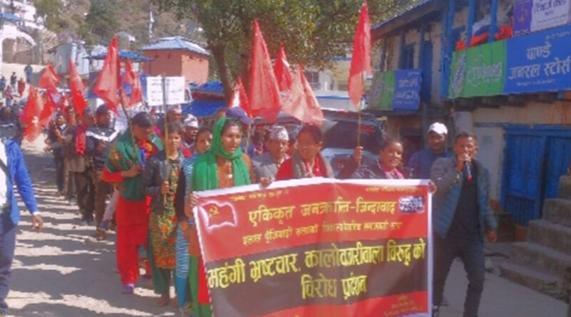
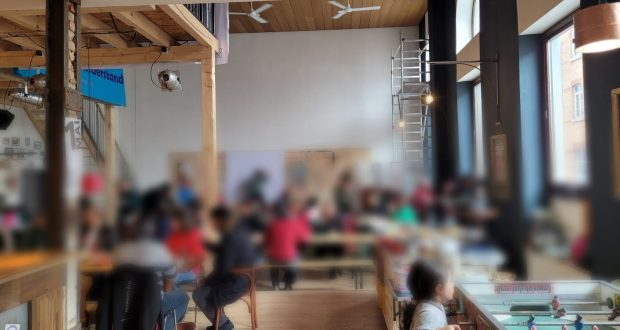
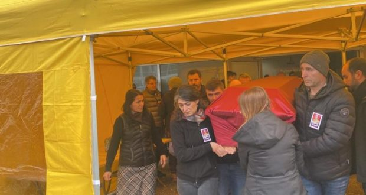

Marxism-Leninism-Maoism News
马列毛主义新闻
[This lan. PDF][This lan. ODT][This lan. MD][This lan. TXT][This lan. TXT LIST]
Please select your language 请选择你的语言:
Origin | 中文 | English
Rare Brazilian Music presents & quot; 4 pieces for four hands piano (1967) & quot; by José Antônio de Almeida Prado - The New Democracy
Author: Rosa Minine
Description: The Brazilian Rare Music Show, which focuses on Câmara Music, presents the work 4 pieces for four hands piano (1967), by the composer and pianist,
Publish Time: 2023-02-27T00:05:00-03:00
Modified Time: None
Updated Time: None
Images: ['SescSP28Fev-720x480.png']
Section: Agenda Cultural
Tags: ['4 Peças piano quatro mãos', 'Agenda Cultural', 'Aleksandra Dicheva', 'compositor', 'Duo Atmospheres', 'José Antônio Almeida Prado', 'Mila Mihova', 'Música Rara Brasileira', 'Youtube']
Type: article
 The show rare Brazilian music , which focuses on the song of the chamber, presents the work 4 pieces for four hands(1967), from the Epianist composer, José Antônio de Almeida Prado (1943 - 2010)Born in Santos, SP. Participation of Duo Atmospheres , formed by Aleksandra Dicheva (first piano)e Mila Mihova (second). “Iniciativa do Zenon InstitutoCultural, a mostra Música Rara Brasileira apresenta semanalmente, às sextas,obras de câmara escritas no Brasil e pouco conhecidas, em geral sem gravação”,divulgam os organizadores.
The show rare Brazilian music , which focuses on the song of the chamber, presents the work 4 pieces for four hands(1967), from the Epianist composer, José Antônio de Almeida Prado (1943 - 2010)Born in Santos, SP. Participation of Duo Atmospheres , formed by Aleksandra Dicheva (first piano)e Mila Mihova (second). “Iniciativa do Zenon InstitutoCultural, a mostra Música Rara Brasileira apresenta semanalmente, às sextas,obras de câmara escritas no Brasil e pouco conhecidas, em geral sem gravação”,divulgam os organizadores.
Abaixo: o vídeo (Recorded in Sofia, Bulgaria, on April 24, 2021, for the 2nd Brazilian Classical Music Festival in Bulgaria, and made available last 10/02 through the Zenon Cultural Institute channel on YouTube).
News Source: https://anovademocracia.com.br/musica-rara-brasileira-apresenta-4-pecas-para-piano-a-quatro-maos-1967-de-jose-antonio-de-almeida-prado/
Brief Starting Week
Author: SolRojista (Person)
Publisher: Blogger (Organization)
Description: Germany. On February 25, at the Central Station of Hamburg, the Alliance against Imperialist Aggression (BGGA) said C ...
Publish Time: 2023-02-27T14:44:00-08:00
Modified Time: 2023-02-28T10:26:18-08:00
Images: ['breves%20x4.JPG', 'breves%20x%205.jpeg', 'breves%20x%206.jpg', 'breves%201.jpeg', 'breves%20x3.jpeg', 'breves%20x%207.jpeg']
 ** Germany.(Gain)He manifested against the new ones in Palestine and Israeli bombings, where the repression by the Israeli army has left 11 dead and more than 100 Palestinians have been injured. Sympathizers passed through the protest with the fist in Altoy, in other cases they passed, shouting slogans in favor of Palestine.
** Germany.(Gain)He manifested against the new ones in Palestine and Israeli bombings, where the repression by the Israeli army has left 11 dead and more than 100 Palestinians have been injured. Sympathizers passed through the protest with the fist in Altoy, in other cases they passed, shouting slogans in favor of Palestine.
[](Images/SOL ROJO Mx/2023-02-27T14-44-00-08-00/breves%20x%205.jpeg)** Palestine. On February 20 and 21, at least 27 young people were arrested, 15 of them in the al-Fawwar field in Hebron and the rest in Naplusa and Jenin. These rags are synchronized and seek to break the heroic resistance of the people's people; For example, in Jerusalem in Zionist army also cateodomytesty but found the libertarian shots of the resistance who go back to pigs. The national liberation struggle of Palestine part of the fair struggles of the World peoples and has the internationalist support of Democrats and revolutionaries.
[

Colombia. Last Thursday, February 23, young students annoying the expiration of student insurance and the lack of maintenance in the schools demonstrated at two different points in the capital, national university and the main school of Cundinamarca. As it was to be expected, the riot police arrived at the scene generating clashes with students who responded with Molotov stones and cocktails.
[
Brazil. Against the crisis that plagues the Brazilian people, at least 1.400 peasantfamilias took land possessions during the "red carnival", in the states of Aagoas, São Paulo(In the Pontal do Paranapanema region), Mato Grosso do Sul and Paraná. In the following of the month, it is expected that it will continue to adapt to land since they officially belong to the Union and should be resolved to the "Agrarian Reform", however, they are in the hands of the relatifundistas and in many cases without documentation. The luminous walk the Agrarian Revolution stands out in Brazil to the shout of New Democracy.
[
News Source: http://solrojista.blogspot.com/2023/02/breves-iniciando-semana_27.html
Celebrate the 175 years of the Manifesto of the Communist Party of Marx and Engels
Author: Verein der Neuen Demokratie
Description: 175 years of the publication of the Communist Party Manifesto, 175 years since Marx and Engels, mainly Marx established it ...
Time: 2023-02-27T15:47:00+01:00
Images: []
175 years of the publication of the Communist Party, 175 years since Marx and Engels, mainly Marx established it and was written from November 1847 to January 1848, when he was established, and published in February February 1848. This year 2023 we are Under that great omen, universal unhito illuminates this new period of revolutions in the era of world proletarian larevolution.
The International Communist Movement, has a starting point "El Manifesto", are 175 years since its appearance. Before there were attempts there are already a history, Silos there are; In Marx's own work and Engels we have his participation in LaLiga de los communist, but that League of Communists was a knead of Divive ideas, it was not a clear expression of the proletariat. It is only with the manifiest of the Communist Party, which is its full name, which at the same time first the communists propose their position and their program and is the departmental point, the corners the great Marxism-Leninism-Maoism; It is to appear from the manifesto that it is still a valid flag to communism, Jrushchov said: that he had finished his mission with the PCUS program of the 61 . Therefore, the manifiest is our starting point, the first miliar stone, a thousands of years will last and when there is communism, it will continue to be conside by that great beginning that led to the new humanity.The proletariat generates ideology: Marxism-Leninism-Maoism, mainly Maoism for the world revolution and Marxism-Leninism-Maoism, Gonzalo thought, mainly Gonzalo thought for Peruvian Larevolution. Marxism was the base by Marx. Marx and Engels take the best that produced humanity: the German classical philosophy, the English and social -social economy to base the ideology of the problem. Marxism has not taken a step in life without a fight against erroneous contributions, thus had to face Proudhon and anarchism, against right -wing deviations and alleged creative developments Dedühring, against opportunistic positions that arise in the German Social Democratic Party. Subsequently, the old revisionism is going to develop after the death of Engels with Bernstein and Kautsky and Lenin will adhere. In summary, Marxism in its first stage will establish Marxist or dialectical materialism, Marxist political economy and scientific socialism.
News Source: https://vnd-peru.blogspot.com/2023/02/celebrar-los-175-anos-del-manifiesto.html
Residents block via Anchieta against PM criminal operations in Cubatão
Author: Ana Nascimento
Description: On February 23, more than 100 residents of the Vila dos Fisherman community blocked Via Anchieta (SP -105) at the height of Cubatão, with barricades and
Publish Time: 2023-02-27T17:19:24-03:00
Modified Time: 2023-02-28T15:42:00-03:00
Updated Time: 2023-02-28T15:42:00-03:00
Images: ['Sem-titulo-2.png', 'svg+xml;base64,PHN2ZyB4bWxucz0iaHR0cDovL3d3dy53My5vcmcvMjAwMC9zdmciIHdpZHRoPSI1NDUiIGhlaWdodD0iNzI3IiB2aWV3Qm94PSIwIDAgNTQ1IDcyNyI+PHJlY3Qgd2lkdGg9IjEwMCUiIGhlaWdodD0iMTAwJSIgc3R5bGU9ImZpbGw6I2NmZDRkYjtmaWxsLW9wYWNpdHk6IDAuMTsiLz48L3N2Zz4=', 'svg+xml;base64,PHN2ZyB4bWxucz0iaHR0cDovL3d3dy53My5vcmcvMjAwMC9zdmciIHdpZHRoPSIxMDI0IiBoZWlnaHQ9IjU3NiIgdmlld0JveD0iMCAwIDEwMjQgNTc2Ij48cmVjdCB3aWR0aD0iMTAwJSIgaGVpZ2h0PSIxMDAlIiBzdHlsZT0iZmlsbDojY2ZkNGRiO2ZpbGwtb3BhY2l0eTogMC4xOyIvPjwvc3ZnPg==', 'svg+xml;base64,PHN2ZyB4bWxucz0iaHR0cDovL3d3dy53My5vcmcvMjAwMC9zdmciIHdpZHRoPSI0MjQiIGhlaWdodD0iNjE4IiB2aWV3Qm94PSIwIDAgNDI0IDYxOCI+PHJlY3Qgd2lkdGg9IjEwMCUiIGhlaWdodD0iMTAwJSIgc3R5bGU9ImZpbGw6I2NmZDRkYjtmaWxsLW9wYWNpdHk6IDAuMTsiLz48L3N2Zz4=']
Section: Nacional
Tags: ['protesto', 'violência policial']
Type: article
 Residents of the fishing village protest against PM operations. Photo: G1.
Residents of the fishing village protest against PM operations. Photo: G1.
On February 23, more than 100 residents of the village community community blocked Via Anchieta(SP -105)at the height of Cubatão, combarricades and flame tires in protest to criminal police operations(PM)that has taken terror to the population and have already shot an elderly woman emanated three others.
 Barricaded by residents. Photo: G1.
Barricaded by residents. Photo: G1.
The result of the operations was reported on posters and slogans by the locality. Even under the police intimidation at the scene, the modifestants continued the protest after the highway was released. Ementrevista to the press monopoly, a community leader denounced the PM: "Main omotive [of mobilization] is that the police shoot first to comply with later."
 Residents Vila dos Fishermen block via Anchieta. Photo: G1.
Residents Vila dos Fishermen block via Anchieta. Photo: G1.
Residents report that police operations are carried out at school, promoting terror against children and young people trying to go and return school activities. In addition, residents also denounce that carsdrested vehicles made the shots at the population, which resulted in an elderly wounded in the shoulder by the police.
 Elderly in the shoulder by the police. Image: G1.Last year, throughout the country, manifestations in the favelas denounced ogenocide of the black people by the troops of repression of the old state. Only in January, the protests mobilized thousands in Vila Dapenha, Dolemão Complexand Maré Complex.
Elderly in the shoulder by the police. Image: G1.Last year, throughout the country, manifestations in the favelas denounced ogenocide of the black people by the troops of repression of the old state. Only in January, the protests mobilized thousands in Vila Dapenha, Dolemão Complexand Maré Complex.
News Source: https://anovademocracia.com.br/sp-moradores-de-cubatao-bloqueiam-via-anchieta-contra-operacoes-criminosas-da-pm/
They kill the Conaie indigenous leader
Author: Frente de Defensa de Luchas del Pueblo en el Ecuador (Person)
Publisher: Blogger (Organization)
Description: The murder of popular and indigenous leaders is not new in the country. In the Correa regime they murdered Bozco Vizuma, José Tendetz ...
Publish Time: 2023-02-27T17:25:00-08:00
Modified Time: 2023-02-27T17:25:23-08:00
Images: ['ASESINAN%20A%20DIRIGENTE%20IND%C3%8DGENA%20DE%20LA%20CONAIE%20FDLP-EC%202023.jpg']
 The murder of popular and indigenous leaders is not new in the country. In the Correa regime they murdered Bozco Vizuma, José Tendetza and Fredy Taish for the Earth's defense. In the lifting of 2019 fueros shot some, including Víctor Guaillas; Today, in the hands of the banker, Eduardomendua, leader of the Conaie.
The murder of popular and indigenous leaders is not new in the country. In the Correa regime they murdered Bozco Vizuma, José Tendetza and Fredy Taish for the Earth's defense. In the lifting of 2019 fueros shot some, including Víctor Guaillas; Today, in the hands of the banker, Eduardomendua, leader of the Conaie.
It is the projection that the class struggle in the country is taking; It becomes ancover, with blood and fire; Here it depends on which side we are willing, on the side of the victims or on the side of those who are willing to defend our lives at any cost?
O We militarize popular and indigenous organizations or we will have to be recovering corpses and go out to complain in international organizations that will solve this severe problem to which we are being subjected.
The dilemma is presented clearly. We resist with weapons in Las Habs, or kill us. If we lose the initiative, this will be taken by the people's elenemeigo and we will be defeated.
With the militarization of the masses we will have an armed masses sea, the only time to defeat the banker's regime, the buyer and alviejo state bourgeoisie.
News Source: https://fdlp-ec.blogspot.com/2023/02/asesinan-dirigente-indigena-de-la-conaie.html
Emiliano Sampaio Jazz Orchestra in the Instrumental Sesc Brasil - The New Democracy
Author: Rosa Minine
Description: Tuesday, 28/02, at 19h, Big Band Emiliano Sampaio Jazz Orchestra, led by guitarist, trombonist, composer and arranger Emiliano Sampaio,
Publish Time: 2023-02-28T00:05:00-03:00
Modified Time: 2023-02-28T16:36:04-03:00
Updated Time: 2023-02-28T16:36:04-03:00
Images: ['MusicaRaraBrasileira27Fev.png']
Section: Agenda Cultural
Tags: ['Agenda Cultural', 'arranjador', 'compositor', 'Emiliano Sampaio Jazz Orchestra', 'guitarrista', 'Instrumental Sesc Brasil', 'são paulo', 'Sesc Consolação', 'Teatro Anchieta', 'trombonista', 'Youtube']
Type: article
 Tuesday, 28/02, at 19h, Big Band Emiliano Sampaio Jazz Orchestra , led by guitarist, trombonist, composer and arranger Emilianosampaio , performs a show within the programming of the project Instrumentalesc Brazil , from Sesc Sao Paulo . The event takes place in person, Anchieta, Sesc Consolação, and online Noteter through the SescBrasil Instrumental Channel on Youtube. "The Instrumental Sesc Brasil receives one of the most reedy jazz big bands in the country and internationally recognized. Emiliano Sampaiiotrazer was a formation of 18 musicians and, in the repertoire, presents the compositions that go through various styles within popular music and seek paths in instrumental music. Emiliano. Sampaio has worked with some of the most famous jazz orchestras in the world, such as Metropole Orkest(Netherlands), HR Frankfurt Radio Big Band, Aalborg Symphony Orchestra(Denmark), HRT Radio Band(Croatia), Graz Composers Orchestra e lungau big band(Austria), Toshi Clinch Big Band e Wayjo(Australia)", she announces the Sesc SP.
Tuesday, 28/02, at 19h, Big Band Emiliano Sampaio Jazz Orchestra , led by guitarist, trombonist, composer and arranger Emilianosampaio , performs a show within the programming of the project Instrumentalesc Brazil , from Sesc Sao Paulo . The event takes place in person, Anchieta, Sesc Consolação, and online Noteter through the SescBrasil Instrumental Channel on Youtube. "The Instrumental Sesc Brasil receives one of the most reedy jazz big bands in the country and internationally recognized. Emiliano Sampaiiotrazer was a formation of 18 musicians and, in the repertoire, presents the compositions that go through various styles within popular music and seek paths in instrumental music. Emiliano. Sampaio has worked with some of the most famous jazz orchestras in the world, such as Metropole Orkest(Netherlands), HR Frankfurt Radio Big Band, Aalborg Symphony Orchestra(Denmark), HRT Radio Band(Croatia), Graz Composers Orchestra e lungau big band(Austria), Toshi Clinch Big Band e Wayjo(Australia)", she announces the Sesc SP.
News Source: https://anovademocracia.com.br/emiliano-sampaio-jazz-orchestra-no-instrumental-sesc-brasil/
Chand Led CPN Stages Protests Against Financial Institutions In Kalikot District
Author: Alan Warsaw
Publish Time: 2023-02-28T05:11:35+00:00
Update Time: 2023-02-28T18:15:42+00:00
Images: ['1677564239_kalikot-1200x560_20230228121327-800x445.jpg']
Tags: ['Biplav', 'Birat Si', 'Communist Party of Nepal', 'CPN', 'Kalikot', 'Kalikot District', 'Nepal', 'Netra Bikram Chand', 'PPW in Nepal', 'Shaha C']
Categories: ['Nepal', "People's War"]

Kalikot District, February 28, 2023: The Netra Bikram Chand-led CommunistParty of Nepal(CPN)staged demonstrations against banks and financialinstitutions in Kalikot district.
The CPN staged the demonstrations alleging that the banks and financialinstitutions were defrauding the citizens by charging high interest rates.
The Party's District Secretary Shaha C said that the protest was held as awarning to stop the exploitation of financial institutions and banks as wellas loan sharks.
In a corner meeting held at Pratima Chowk after the protest rally in ManmaBazar, party leader Birat Si said that the state should control loan sharksand banks and financial institutions that rob citizens.
The CPN has said that if the government does not take immediate steps to stopthe terror of banks and financial institutions, they will be forced to launchstringent protest programs.
Source : https://myrepublica.nagariknetwork.com/news/demonstration-by-cpn-> against-financial-institutions/?categoryId=81
News Source: https://www.redspark.nu/en/peoples-war/chand-led-cpn-stages-protests-against-financial-institutions-in-kalikot-district/
For a true political equality for women
Author: Revolución Obrera
Time: 2023-02-28T09:03:28-05:00
Images: ['Mujer-y-politica-copia.jpg', 'Cifras.jpg']
Tags: ['8 de marzo', '8 de marzo 2023', 'Emancipación de la Mujer', 'feminismo', 'Movimiento Femenino Revolucionario']
Categories: ['Emancipación de la mujer']
!For a true political equality for women1](https://www.revolucionobrera.com/wp-content/uploads/2023/02/Mujer-y-politica-copia.jpg)The deep cause of the unequal and oppressive situation of the woman was and continues of an economic nature. With the emergence of private property, in Palabras de Engels, the man also wielded the reins in the house; Lamujer was degraded, turned into the servant, the slave of man's lalujuria, in a simple reproduction instrument. Since then, in all societies based on private property, Lamujer's situation has been oppression and inequality against man.
In the history of mankind, capitalism is the last society divided in classes and whose social relations of production and regime of ownership of the means of production are based on the existence and protection of private property, that is the reason why it still persists and the situation of oppression and inequality of women is more brutal.
Oppression and inequality that is disguised by the hypocritical statements of bourgeois democracy, about the guarantee of equality for women in all spheres of society, hypocrisy that becomes “brilliant and enviable” if compared to the open oppression and inequality of the Woman, governed by Islamic laws in the states of theocratic dictatorship of the explolators.
One of those social spheres is politics, in front of which the bourgeoisie affirms that in capitalism women enjoys full equality because the constitutional laws of the bourgeois republics guarantee full political rights, including the right to vote and to be chosen as rulers.
The classic claim of the suffragists, ─ and in particular of the feminist of the early twentie real ”with the practice of parity in the electoral lists and in the designation of bureaucratic positions in the state; parity that the reformism monitors as the maximum conquest in the struggle for the political equality of Lamujer.Not even the bourgeoisie in its time of revolutionary splendor, considered the political equality of women; Jean Jacques Rousseau when the reason for political equality for all citizens said, expressly not including women. _ The logic of Rousseau was that women should be educated in a way to instill that obedience is the highest virtue, according to the Indian communist Anuradhaghandy.
Today some bourgeois and even small -speaking women exercise high political charges, by election or by designation as presidents, vice presidents, ministers, mayors, governors ..., but always subject to the demanding decision of the men's political chiefs, and always with lower salaries those received by men . Such participation does not resolve the political inequality of women, nor of those who govern or the governed, since every bourgeois state, whatever its form, is a class dictatorship, and the women who exercise ruling positions are instruments of that dictatorship to present inequality social that presupposes the inequality of women. Recent judge is that of Dina Boluarte, who in Peru elevated to the presidency on December 7, 2022 for a constitutional coup, at the end of January, he added under his political responsibility more demanding murders(58)What days in office(55), and continues to launch the staging state repressive machine against the mobilized people, of which nomenos of half are women.
Diametrically different is the program of the revolutionary proletariat to make the emancipation of women reality and, as part of it, provide a true and real political equality.
To abolish private property and suppress forever the right that the man gives to the man to oppress the woman, the revolutionary proletariat first to assume the government of society, so that the task in a question of the socialist revolution in Colombia is to destroy the power of the power of the political power of The bourgeoisie, landowners and imperialists. But noble with the destruction of his state apparatus; This is hardly the condition for the true triumph: the creation of a new type of state, the stages of the dictatorship of the proletariat_.Thus, the new state of dictatorship of the proletariat, through the participation of women in equal foot with men, opens the way for its truth emancipation, and for the first time in the history of the societies different in classes, women conquer a real political equality Paraser part of the new “Government System, the Assemblies of Poor Workers and Campesinos, supported by the General Armament of the People”, organizations of the direct power of women and armed men linked to the management of all the affairs of the State, the body of power that ““ It will expropriate and confiscate without compensation all the financial, industrial, agrarian, commercial, transport and communications capital, in the hands of the bourgeoisie, the landowners and all the imperialists associated with these Classes ”.
Consolidate the new socialist property on the means of production, reads the proletariat to continue the revolution under its class dictatorship, performing among others, specific tasks that materially eliminate the old andugue of the economic, political and marital enslavement of women, and thus, guarantee really his political equality in socialism. Necessary tasks for:
“Break all the bonds that prevent women from their full participation in society: 1 . I immediately prohibit all forms of discrimination against women: in suppartapation in the bodies of power, at work, in salaries and in the most areas of social life. 2. Socialize home tasks ... 3 . Promote the socialization of parenting ... 4 . Attend with special care matters such as pregnancy, which affect the working woman ... 5 . Socialist production relations will guarantee the material conditions for the reproduction and raising of children ... 6 . Promote great ideological and political activity to educate men and women, removing their bourgeois point of view-expresses or undercover-, about the "right" of man to dominate women. Starting with eradicating all forming physical, verbal and psychological abuse of men about women. ”However, only the communist society will guarantee the total emancipation of women, because even with all the socialist revolutionary transformations to break the economic basis of oppression and inequality of women, and the great advance in the conquest of their real equality, - - Enespectial of its political equality - the gap is maintained during the socialism, as seen in the experience of Soviet power:
!For a true political equality for women2](https://www.revolucionobrera.com/wp-content/uploads/2023/02/Cifras.jpg)Today, when the power of the State is in the hands of the capitalist exploiters, the position of revolutionary women should not be in the institutions of the political power of the enemies of the people, but in the organizations that face that power: in mass organizations, union, peasants, student, popular, female ... and mainly the revolutionary political organizations that such as worker union(mlm)_, they fight for the construction of the revolutionary party of the proletarian and for the construction of a revolutionary female movement.
The scope and success of the socialist revolution is measured in the lamovilization and emancipation of women as part of the emancipation of the proletarian!
News Source: https://www.revolucionobrera.com/mujer/mujer-6/
Ecuador: They kill the indigenous leader of the Conaie
Author: SERVIR AL PUEBLO
Publish Time: 2023-02-28T09:54:38+00:00
Modified Time: 2023-02-28T09:54:38+00:00
Description: The murder of popular and indigenous leaders is not new in the country. In the Correa regime, Bozco Vizuma, José Tendetza and Fredy Taish for the defense of the Earth. In the Levantam ...
Images: ['image-31.png']
Type: article
28/02/2023
 The murder of popular and indigenous leaders is not new in the country. In the Correa regime they murdered Bozco Vizuma, José Tendetza and Fredy Taish for the Earth's defense. In the lifting of 2019 fueros shot some, including Víctor Guaillas; Today, in the hands of the banker, Eduardomendua, leader of the Conaie.
The murder of popular and indigenous leaders is not new in the country. In the Correa regime they murdered Bozco Vizuma, José Tendetza and Fredy Taish for the Earth's defense. In the lifting of 2019 fueros shot some, including Víctor Guaillas; Today, in the hands of the banker, Eduardomendua, leader of the Conaie.
It is the projection that the class struggle in the country is taking; It becomes ancover, with blood and fire; Here it depends on which side we are willing, on the side of the victims or on the side of those who are willing to defend our lives at any cost?
O We militarize popular and indigenous organizations or we will have to be recovering corpses and go out to complain in international organizations that will solve this severe problem to which we are being subjected.
The dilemma is presented clearly. We resist with weapons in Las Habs, or kill us. If we lose the initiative, this will be taken by the people's elenemeigo and we will be defeated.
With the militarization of the masses we will have an armed masses sea, the only time to defeat the banker's regime, the buyer and alviejo state bourgeoisie.
_Reproduced:
News Source: https://serviralpuebloperiodico.wordpress.com/2023/02/28/ecuador-asesinan-a-dirigente-indigena-de-la-conaie/
Update of the class struggle in Mexico (02/28/2023)
Author: SERVIR AL PUEBLO
Publish Time: 2023-02-28T09:57:05+00:00
Modified Time: 2023-02-28T09:57:05+00:00
Description: Oaxaca, Mexico. As part of an internal consultation process, ejidatarios in the northern part of the Isthmus of Tehuantepec proceeded today February 27 to the final suspension of the works of Modes ...
Images: ['image-32.png']
Type: article
 02/28/2023
02/28/2023
** Oaxaca, Mexico.(Ciit). Según informaUCIZONI, _“Ejidatarios y colonos de Matías Romero, San Juan Guichicovi yBarrio de la Soledad han suspendido los trabajos de modernización en las víasdel ferrocarril del istmo de Tehuantepec y de la carretera transístmica”._Como se ha documentado anteriormente, estos trabajos están resguardados por laGuardia Nacional y la Marina Armada de México, protegiendo siempre lasacrosanta propiedad privada y atentando contra la propiedad social de latierra. Durante todo el día se han reportado conatos de enfrentamiento endistintos puntos de la región con el arribo de los cerdos uniformados. Larealidad es contundente: el CIIT no puede avanzar a menos que se imponga asangre y fuego; las resistencias en torno a este megaproyecto de despojo ymuerte crecen y se articulan cada vez más desde las comunidades, lasorganizaciones democráticas y las alianzas que se gestan para defender latierra y el territorio. La agresión armada del viejo Estado contra ejidatariosy comuneros en cualquier punto de la región provocará un pujante estallidosocial.
Reproducido de:https://solrojista.blogspot.com/2023/02/breves-iniciando-semana_27.html
Anuncio publicitario
News Source: https://serviralpuebloperiodico.wordpress.com/2023/02/28/actualizacion-de-la-lucha-de-clases-en-mexico-28-02-2023/
MFP-Brazil: Long live the heroic struggle of Brazilian black women!
Author: SERVIR AL PUEBLO
Publish Time: 2023-02-28T10:18:33+00:00
Modified Time: 2023-02-28T10:18:33+00:00
Description: On the occasion of the proximity of March 8, we reproduce an article published on the website of the Popular Women's Movement of Brazil in November 2022, on the struggle of women ne…
Images: ['image-33.png', 'image-34.png', 'image-35.png', 'image-36.png', 'image-37.png', 'image-38.png', 'image-39.png', 'image-40.png', 'image-41.png', 'image-42.png']
Type: article
_ For the reason for the proximity of March 8, we reproduce an article published in the website of the Popular Movement of Brazil in November of the 2022 . The Spanish translation of the Portuguese is ours and unofficial, so that as well is completely ours._
The month of November marks the fight of the Black People, so the Popular Movement - MFP, comes to honor some black women that history in the struggle of the Brazilian people. Certainly there are a lot, they are anonymous heroes, progressive intellectuals and simple fighters by the people, and remains the task of the Brazilian revolutionaries disapprove and raise their standards.
Death to racism!
Long live the fight of the Black People!
Racism, the oppression experienced by more than half of the Debrasil population, has its roots in more than five centuries of oppression and exploitation that is based on the formation of our society, founded on colonialism, slavery and semi -feudalism. The permanence of this feudal remnant in the structure of society to this day is an ideological support for the exploitation of a large contingent of popular masses that are subject to the worst salaries, working conditions, housing and daily humiliations. It is therefore served to the domain of imperialism, the terradicas and the great bourgeoisie over the whole of the people and must serbarrid by the democratic revolution pending and late in our country.
It will not be through electoral promises, or cosmetic reforms to open up the capitalist system, such as the lure of representativeness or alleged individual empowerment that proclaims that the victory against the racism occurs with the enrichment of some people, fragmenting laclass and weakening the struggle of The oppressed. The anti -racist struggle can ytriunfar, deeply linked to the struggle of the working classes, in a new democracy revolution for the overthrow of the old order and for the construction of a new economy, a new policy and a newaculture.
Give Dos Palmares

Dandara is an expression of the black women who were enslaved, who were accepted to accept such a condition and dared to challenge and fight against the exploitation and oppression system in force at the time. Dandara, together with Azumbi, opposed establishing a peace agreement with the Pernambuco government, understanding that the conciliation between the Quilombolas and the colonial government would brought betray the struggle for freedom. When arrested, he preferred to go rather than return to his slave status.
Benguela Tereza
 Born in 1700 and brought to Brazil as a slave, Benguela's Tereza was a significant unalíer of the biggest quilombo in what is now known as the Mato-Grosso statode, Quilombo do Piolho. Under her political and military leadership, thequombo, which included blacks and indigenous people released from the condition of Seclavos, resisted about two decades, until its destruction by the forces of Luís Pinto de Sousa Coutinho. Teresa resisted bravely and led Quilombola's larice until the end. As a way to humiliate it, they looked at their heads and exposed it to a post where everyone could see it. Teresa remains today an expression of the force of fighters.
Born in 1700 and brought to Brazil as a slave, Benguela's Tereza was a significant unalíer of the biggest quilombo in what is now known as the Mato-Grosso statode, Quilombo do Piolho. Under her political and military leadership, thequombo, which included blacks and indigenous people released from the condition of Seclavos, resisted about two decades, until its destruction by the forces of Luís Pinto de Sousa Coutinho. Teresa resisted bravely and led Quilombola's larice until the end. As a way to humiliate it, they looked at their heads and exposed it to a post where everyone could see it. Teresa remains today an expression of the force of fighters.
MARIA FIRMINA DOS REIS
 Born in Maranhão on March 11, 1822, Maria Firmina Dos Reis Hocnsidea The first black writer in Brazil and Latin America. To the Seraprobada in the Teacher Contest, she refused to climb on stage by the city of São Luís on slave loins. At that time, Firmina would have affirmed that "slaves were not animals to carry mounted people in them." In 1859, he published his novel entitled «Úrsula», under the pseudonym of «Uma Maranhense», considered the first abolitionist book of Brazil. Author said his texts without signing with his real name, but even so, he did not impose his ideas against slavery. MARÍA FIRMINA participated in the intellectual life of Maranhão, publishing books, articles in newspapers and magazines of a abolitionist nature, in addition to acting comfortable, Musician and creator of the first Mixed school in Brazil, even improving discontent in society.
Born in Maranhão on March 11, 1822, Maria Firmina Dos Reis Hocnsidea The first black writer in Brazil and Latin America. To the Seraprobada in the Teacher Contest, she refused to climb on stage by the city of São Luís on slave loins. At that time, Firmina would have affirmed that "slaves were not animals to carry mounted people in them." In 1859, he published his novel entitled «Úrsula», under the pseudonym of «Uma Maranhense», considered the first abolitionist book of Brazil. Author said his texts without signing with his real name, but even so, he did not impose his ideas against slavery. MARÍA FIRMINA participated in the intellectual life of Maranhão, publishing books, articles in newspapers and magazines of a abolitionist nature, in addition to acting comfortable, Musician and creator of the first Mixed school in Brazil, even improving discontent in society.
Luisa Mahin

tia ciata
 Hilária Batista de Almeida, known as Aunt Cata, was born on January 13, 1854 in Santo Amaro da Purificão, in Bay. At 22, she moved to Río Dejaneiro, among the waves of migrants who were looking for better devoid conditions. When staying alone to raise her daughter, she started working as a cook in the center of Rio de Janeiro. Through your clothes and food express southern, which was prohibited at that time. Tia Ciata stands out for, in the times of repression of artistic expressions considered "subversive", such as the wheels of Pagoda, give the backyard of his house to perform popular evenings that gave rise to the Samba Carioca.
Hilária Batista de Almeida, known as Aunt Cata, was born on January 13, 1854 in Santo Amaro da Purificão, in Bay. At 22, she moved to Río Dejaneiro, among the waves of migrants who were looking for better devoid conditions. When staying alone to raise her daughter, she started working as a cook in the center of Rio de Janeiro. Through your clothes and food express southern, which was prohibited at that time. Tia Ciata stands out for, in the times of repression of artistic expressions considered "subversive", such as the wheels of Pagoda, give the backyard of his house to perform popular evenings that gave rise to the Samba Carioca.
LAUDELINA DE CAMPOS MELO
 Laudelina de Campos Melo, born on October 12, 1904, in Poços de Caldas- mg, was forced to work as a domestic employee at the age of 7, abandoning her studies to take care of her brothers and help her mother, already already her Father had died. During the state of Novo, Laudelina was incorporated Communist Party of Brazil and became increasingly involved in the struggle for democratic rights, against racial discrimination and, mainly, integrating the struggle of household workers, culminating with the formation of the first association of Home workers.
Laudelina de Campos Melo, born on October 12, 1904, in Poços de Caldas- mg, was forced to work as a domestic employee at the age of 7, abandoning her studies to take care of her brothers and help her mother, already already her Father had died. During the state of Novo, Laudelina was incorporated Communist Party of Brazil and became increasingly involved in the struggle for democratic rights, against racial discrimination and, mainly, integrating the struggle of household workers, culminating with the formation of the first association of Home workers.
The fight and legacy of Laudelina during the following decades made the lacategory of household workers earn important rights and recognition. Laudelina died, at 81, in 1991, in Campinas, after years of intense fight.
Helenira Resende

Carolina de Jesus
 Born in Sacramento, Minas Gerais, Carolina María de Jesús was born on the 14th demarzo of 1914. Of very humble origin, granddaughter of slaves and daughter of Unalavandera, since childhood she expressed the desire to learn to read and write. At 7 years she began to go to school, but after studying the second primary graduate, she had to leave school, since her mother could not manner her and her 7 brothers. Always going through difficulties, hunger, cold and without a fixed place to live, Carolina de Jesus passed after the childhood living in different cities inside São Paulo. They say that because of his natural rebellion, he did not adapt to the work of domestic employee arrived in São Paulo in 1947. Pregnant, he ended up living in the street by at that time did not give work to the pregnant women. Thus he arrived at the Favelade Canindé, the result of a hygiene policy of the then governor of Sãopaulo, Adhemar de Barros.
Born in Sacramento, Minas Gerais, Carolina María de Jesús was born on the 14th demarzo of 1914. Of very humble origin, granddaughter of slaves and daughter of Unalavandera, since childhood she expressed the desire to learn to read and write. At 7 years she began to go to school, but after studying the second primary graduate, she had to leave school, since her mother could not manner her and her 7 brothers. Always going through difficulties, hunger, cold and without a fixed place to live, Carolina de Jesus passed after the childhood living in different cities inside São Paulo. They say that because of his natural rebellion, he did not adapt to the work of domestic employee arrived in São Paulo in 1947. Pregnant, he ended up living in the street by at that time did not give work to the pregnant women. Thus he arrived at the Favelade Canindé, the result of a hygiene policy of the then governor of Sãopaulo, Adhemar de Barros.
He built his own hut and raised his children there. Carolina said that no man would understand his literary need, referring to the parents of sushijos who had abandoned her to raise them alone, because she always sought to write and read. In the 1960s, Carolina de Jesús premiered its greatest literary hexite, or ax of clearance, in which it achieved a certain social ascent and prestige. He even launched an LP with his songs with copyright. SinEmbargo, his other books did not have the same prominence and Carolina had to collect paper to survive. Carolina de Jesús humbly died on February 13, 1977, at age 63, in Parelheiros, thrown into the invisibility and oblivion by the editorial market.
Marli Pereira Soares
 Marli Pereira Soares, or Marli Coragem as she knew her, was born in Río Dejaneir Military, witnessed the invasion of the Military Police at his home, which resulted in his brother, Paulo Pereira Soares. Marli she even went to Police Station 20, Enbelford Roxo, Baixada Fluminense, where she recognized the murderers of Suhermano, who were never arrested or sanctioned by the crime they claimed.### Conceição Evaristo
Marli Pereira Soares, or Marli Coragem as she knew her, was born in Río Dejaneir Military, witnessed the invasion of the Military Police at his home, which resulted in his brother, Paulo Pereira Soares. Marli she even went to Police Station 20, Enbelford Roxo, Baixada Fluminense, where she recognized the murderers of Suhermano, who were never arrested or sanctioned by the crime they claimed.### Conceição Evaristo
 Born in Belo Horizonte, on November 29, 1946, Maria Conceição Evaristoes a great exponent of Brazilian literature, mainly because their works address reflections and complaints about social and racial inequality, in addition to writing about the condition of black women in Brazil. She seconds in her children, childhood and adolescence were marked by poverty. She worked as a domestic employee while she was dedicated to her studies, aspiring to be a teacher. Conceição completed the normal course at the age of 25 and halfway to Rio de Janeir PUC-RIO and a LIFF doctorate, in addition to having taught in several schools and universities. Conceiçãoevaristo is one of the main Brazilian -supported literary expressions.
Born in Belo Horizonte, on November 29, 1946, Maria Conceição Evaristoes a great exponent of Brazilian literature, mainly because their works address reflections and complaints about social and racial inequality, in addition to writing about the condition of black women in Brazil. She seconds in her children, childhood and adolescence were marked by poverty. She worked as a domestic employee while she was dedicated to her studies, aspiring to be a teacher. Conceição completed the normal course at the age of 25 and halfway to Rio de Janeir PUC-RIO and a LIFF doctorate, in addition to having taught in several schools and universities. Conceiçãoevaristo is one of the main Brazilian -supported literary expressions.
_ Original produced in Portuguese: https://brasilmfp.blogspot.com/search?updated-max=2022-11-25t22:26:00-03:00&max-results=7&start=5&by-Date=False_
Commercial
News Source: https://serviralpuebloperiodico.wordpress.com/2023/02/28/mfp-brasil-viva-la-lucha-heroica-de-las-mujeres-negras-brasilenas/
Europe: new solidarity actions with the people of Mexico
Author: SolRojista (Person)
Publisher: Blogger (Organization)
Description: From the Spanish State come images of new solidarity actions with the people of Mexico. We deeply appreciate the ...
Publish Time: 2023-02-28T10:25:00-08:00
Modified Time: 2023-02-28T10:26:47-08:00
Images: ['img_4185.cleaned-1.webp', 'solidaridadmexico2-1.webp', 'image-29.webp', 'img_4188.cleaned.webp']
 From the Spanish State come images of new actions of solidarity with the people of Mexico. We deeply appreciate the signs of solidarity in proletarian internationalism towards our struggle.
From the Spanish State come images of new actions of solidarity with the people of Mexico. We deeply appreciate the signs of solidarity in proletarian internationalism towards our struggle.
Proletarians and oppressed peoples of the world, units!
If you want to see these and other actions enter serve Alpueblo.


News Source: http://solrojista.blogspot.com/2023/02/europa-nuevas-acciones-de-solidaridad.html
Red Women of Germany Committee: March 8, 2023 statement
Author: SERVIR AL PUEBLO
Publish Time: 2023-02-28T10:34:04+00:00
Modified Time: 2023-02-28T10:34:04+00:00
Description: We reproduce this positioning for the revolutionaries and progressive of the Spanish State, obtained from the demvolked This document is a ...
Images: ['image-43.png']
Type: article
02/28/2023
Reprodu we produce this positioning for the revolutionaries and progressive of the Spanish state, obtained from the demvolked("Serve the people" in German). Este documento se trata de una traducción nuestra (not official), so possible translation errors or political concepts that can be derived from a bad translation, corresponds only to us.
 __
__
Proletarians of all countries, unite!
Women, fight and defend us: against the wave of inflation and militarism!
On March 8 of this year, International Women's Day, the War of Russian imperialism against Ukraine has been just over a year. From which it began, the situation of the working class and the people in this and in all other countries of the world has deteriorated greatly. A wave of inflation is made that the cost of living is triggered in all areas, along with unatase of inflation that had not been seen in Germany since the second gueravingial, ending with our salaries before we can spend it. Noimportes what imperialists try, they cannot control the economic crisis that has been developing in recent years. Every time of the situation worsens and falls on our shoulders, the shoulders of the class and the people. The only thing they can do is demonstrate that their system, elimperialism, cannot sustain us and feed us and that it is a system. Against imperialism and patriarchy!
All this, the wave of inflation, the fall of real wages, the misguided of nurseries, hospitals and much more, affects the entire class class, but further affects working women, because somoso appropriate and exploited by imperialism and patriarchy. This is the situation in which popular women and working class live around the world. Therefore, we have double reason to get up against this system and dislike our anger against it. The imperialists know it, so stressing to stop our struggle, making it a protest without teeth, channeling it by safe roads for the system, and are trying to devote us with their rotten and reactionary ideology. We must prevent us from joining our brothers and class sisters from all countries and unleashed our fight in a powerful storm against imperialism and the patriarchy. Instead, everyone should defend themselves or the interesting assumptions of their group. This is not the path of working class women, this is not our way!Patriarchy can only be applied if its economic base is destroyed: private property, today elimperialism. This requires a proletarian women's movement, led by the avant -garde of the working class, the Communist Party. And must be stakeholder with all the oppressed and exploited of the world. Because only under communism, private property no longer exists, only under the community the emancipation of women can come true. Therefore, this March 8 we fight side with the women of the working class and the people of all countries for a brilliant red future.
Towards the proletarian women's movement!
_ RFA WOMEN OF THE RFA(Red women's committee - FRG)February 2023_
Commercial
News Source: https://serviralpuebloperiodico.wordpress.com/2023/02/28/comite-de-mujeres-rojas-de-alemania-comunicado-del-8-de-marzo-de-2023/
Naxalites Sabotage Vehicle At Road Construction Site In Gadchiroli District
Author: Alan Warsaw
Publish Time: 2023-02-28T10:39:49+00:00
Update Time: 2023-02-28T18:40:22+00:00
Images: ['bfe82cb69fd6b38b3da208aafab5351e-800x445.jpg']
Tags: ['CPI (maoist)', 'CPI(maoist)', 'Gadchiroli', 'Gadchiroli district', 'India', 'Maharashtra', 'Maharashtra State', 'Naxal', 'naxalites', 'naxals', 'police', 'PPW in India']
Categories: ['India', "People's War"]
Gadchiroli District, February 28, 2023: A squad of Naxalites set ablaze avehicle engaged in road construction work in Maharashtra's Gadchirolidistrict, police said on Tuesday.
According to a police official, at around 11 pm on Monday, armed Naxalitescame to the construction site at Botanpundi-Visamundi road and set afire thevehicle, a mixer truck.
After the incident came to light on Tuesday morning, the Tadgaon policeinspected the spot and registered a case.
Source : https://www.ptinews.com/news/national/maha-naxalites-burn-down-> vehicle-engaged-in-road-construction-in-gadchiroli-district/522922.html
News Source: https://www.redspark.nu/en/peoples-war/naxalites-sabotage-vehicle-at-road-construction-site-in-gadchiroli-district/
Taranto kindergartens. The CISL tries to boycott the assemblies for the strike of March 8
Author: fannyhill
Description: We have, like Slai Cobas and USB, launched from today a tour of assemblies in kindergartens, to inform the workers of the dispute ...
Time: 2023-02-28T11:17:00+01:00
Images: []
We have, like Slai Cobas and USB, launched from today a tour of neglhesile assemblies, to inform the workers of the dispute that we have opened concromune and company, on an increase in time, wages and defense of health, and which will see together with A table already summoned to the Prefecture, Losciopero of the workers and workers who will take place on March 8.
This morning this message sent to us by the Allactor Cisl of the kindergartens registered with them:
_ "Girls listened to I knew that the Cobas and USB enrolled will come to the stalk with you during working hours. It is forbidden to do work union. Vasto and Bruno Ciari. _ ra will make trade union proselyism by filling you with chatter, to make them at their strike. Then on your time nn have allowed you to tell your structures and talk to all there may be letters contestation of non -authorization. _ __se they asked for assembly ..... it is for their members. We do not have anything. of the contract with the Municipality I am nosta -attention. I think I have clarified.
What Alessio Carpignano della Cisl writes as well as totally false, is an evident anti -union action, which aims to prevent the free exercise of assemblies and strike and to discredit Slai Cobas and USB. therefore, beyond the union leinials that we are already taking, We will also report legallyquestasta O.S.
Assemblies can be done in the time and workplace(art. 20Dello Statute of workers); All workers and workers have the right to participate, tutte, whether they are enrolled in other unions or non -discounted to nothing; The assembly hour is regularly paid to all iPartiCipanti; No one will have a letter of dispute because both the assembly the strike are authorized This dirty and false maneuver only shows that CISL is afraid of the battle of the battle!It is therefore good, it means that we are affecting.
We all participate in the assemblies!We are carrying out our interests and needs, for too many years denied.
Slai workers Cobas Sc Taranto
News Source: https://femminismorivoluzionario.blogspot.com/2023/02/asili-taranto-la-cisl-cerca-di.html
PC February 28 - Portovesme - Rebeling is right!
Author: maoist
Description: South Sardinia, 4 Portovesme workers rise to the chimney: "No to the stop of the plants" ...
Time: 2023-02-28T12:56:00+01:00
Images: ['101759540-0dcaea9c-63cf-4e83-9463-34770993bd09.jpg']
South Sardinia, 4 Portovesme workers rise to the chimneys: "No farms of the plants"
 One of the 4 workers in the Portovesme chimney(ansa)Almost all the establishments of the Srl in crisis. 1,300 -firing place risk. "Words are not enough: without a strong commitment from Romanon we go down"
One of the 4 workers in the Portovesme chimney(ansa)Almost all the establishments of the Srl in crisis. 1,300 -firing place risk. "Words are not enough: without a strong commitment from Romanon we go down"
Cagliari - At three in the morning four at the top of the Ciminiera of the lead system, KSS, of Portoversme srl. They protest 100 metro land against the stop to the plants and for the defense of the
work place. "This is not a header - the 4 workers told the _ansa Urgent to the Ministry to open a comparison with all the interlocutors sitting at the same table and finding an immediately on the energy front. Reassurances are not enough, but to go down, serious and strong commitments are needed ".
There are 1,300 employees who risk their place. Since yesterday, the Degliappalti workers have been in permanent assembly, in the square of Portovesme srl, Conpresidio in the Portineria delle Procri, where some were also placed.
News Source: https://proletaricomunisti.blogspot.com/2023/02/pc-28-febbraio-portovesme-ribellarsi-e.html
PC February 28 - The death of migrants in Crotone: a crime of state and government - Just lies of planted and melons!
Author: maoist
Description: Cutro shipwreck, the accusation of the rescuer: "Those migrants could be saved" Orlando Amodeo, rescuer in Crotone and ...
Time: 2023-02-28T13:03:00+01:00
Images: ['orlando-amodeo-soccorritore-cutro-1280x706.jpg']
Cutro shipwreck, the accusation of the rescuer: "Those migrants could be saved"
 Orlando Amodeo, rescuer in Crotone and former medical manager of the policy, has criticized the official version on the impossibility of intervening the conditions of the sea.
Orlando Amodeo, rescuer in Crotone and former medical manager of the policy, has criticized the official version on the impossibility of intervening the conditions of the sea.
Orlando Amodeo, rescuer in Crotone and for long managerial years of the State Police, launches strong accusations on the shipwreck of the interior of the interior of the interior of the interior, planted: "Those migrants could be. It is not true that the conditions of the sea, as interior and Fiammegialle say, made it impossible to bring the boat of migrants closer. We have able to face the sea by force 6 or force 7. I have been aboard those boats, here in these years, and we have accomplished in similar conditions ». Amodeo said it live in Non not the Arena by Massimo Giletti on La7. "Why are we still chatting on this? Lavita is sacred for everyone, enough with closed ports, open ports, blocconaval, naval unlock, "added Amodeo," you have to help these aperson to come here with ships and with planes: the smugglers liinvents we, if Italy And Europe became more human there would not be smugglers and these tragedies would no longer exist ».
nonelarena shipwreck, amodeo: "desired tragedy, it was avoidable"
News Source: https://proletaricomunisti.blogspot.com/2023/02/pc-28-febbraio-la-morte-dei-migranti.html
PC February 28 - Against the repression of state towards students fighting the war - Bari 6 students reported
Author: maoist
Description: BARI
Time: 2023-02-28T13:19:00+01:00
Images: ['Bari-CR-720x300.jpg', 'Bari-locandina-300x300.jpg']
Bari. Six students reported for a banner against the war at the University of changing route
 Six students of the University of Bari were searched and reported in the day of Saturday 25 February for having exhibited in front of the Unostriscione Polytechnic - then seized - of a complaint against the agreements between the University Ele Industrie Bellic, an action carried out in connection with Lamanifestation National called by the port workers in Genoa who had over ten thousand people in the square in the same day in the square and where, as students and university students, we are the same next to the struggle to block the transit of weapons in ports.
Six students of the University of Bari were searched and reported in the day of Saturday 25 February for having exhibited in front of the Unostriscione Polytechnic - then seized - of a complaint against the agreements between the University Ele Industrie Bellic, an action carried out in connection with Lamanifestation National called by the port workers in Genoa who had over ten thousand people in the square in the same day in the square and where, as students and university students, we are the same next to the struggle to block the transit of weapons in ports.
We immediately want to make it clear that we will not back these intimidation in the least, we are convinced of the reasons for our protest Edel that within our universities must be guaranteed space for political and democratic diagibilities.
 With even greater conviction we continue the mobilization, we give APPUNTION Thursday 2 March at 15:00 at the entrance to via Orbona Del Politecnico di Bari for a press conference.
With even greater conviction we continue the mobilization, we give APPUNTION Thursday 2 March at 15:00 at the entrance to via Orbona Del Politecnico di Bari for a press conference.
News Source: https://proletaricomunisti.blogspot.com/2023/02/pc-28-febbraio-contro-la-repressione-di.html
PC February 28 - Against the imperialist war advance the line and the proletarian and communist organization
Author: maoist
Description: The underworldly Inter war in progress in Ukraine had a new accelerated one after the born summit of Ramstein who decided a massif ...
Time: 2023-02-28T13:25:00+01:00
Images: ['foglio%20genova_page-0002.jpg']
The Inter -current Inter war in Ukraine had a new accelerataDope The NATO summit of Ramstein who decided a massive sending of all kinds of arms of an offensive nature for the purpose not to defend the ukrained in the invasion but to support the counter -offender aimed at resuming The areas Donbass and Crimea and place the US/ NATO and the Imperialist countries of Europeiai borders of Russia, ready to take advantage of backward and weaknesses to crisis the reactionary regime of Russian Imperialism of Putinfino to bend the military political ambitions and resize its pesostrategical and economic. It is clear that in this perspective passosucessive is the world fire in the forms that the relationships of forcing will be and that certainly does not exclude the use of tactical nuclear or strategicoche nuclear is.
 The invasionerussian of Ukraine which reaches February 24 the first year is increasingly being achieved as an offensive step of Russian imperialism dictated by reasoning that, however, far from having restored the weight of Russia, he grabbed its downsizing process, has put On the carpet the realports of force currently existing in the field of imperialism.
The invasionerussian of Ukraine which reaches February 24 the first year is increasingly being achieved as an offensive step of Russian imperialism dictated by reasoning that, however, far from having restored the weight of Russia, he grabbed its downsizing process, has put On the carpet the realports of force currently existing in the field of imperialism.
The war launched in Ukraine was therefore a point of arrival of the imperialist inter -trading in the Europe/Russia scenario, but on the evidently of the US/China dispute of a world in economic crisis, a new division, in which every imperialism wants its partialism, makes the His part, contributes to that perfect storm that he can in the third world war. Ukraine found itself to be theterritory of the acuteization of this dispute, but within this equestrian territory disputes a decisive factor was the reactionary transformation of the ephaltian-nazi of the Ukrainian government which, going even further and forcing the capitalist bourgeoisy manodella, Ukrainian oligarchic , has become part of the pharmator triggering the acuteization of the world crisis and his transition to a mainly military phase.On a world scale it is right and necessary to loudly request that I stopped and the escalation of
This war, it is right to respond to the desire for peace that comes to the fire of the surrounding territories and other parts of the world, but Ilpunto is that these requests cannot be accepted by the powers that have triggered the current spiral and that indeed the They feed the alservice of the imperialist bourgeoisie and, in particular, of the parts of the Sielslegate to the war industry and which draw immense profits from it. Instead of overturning the imperialist governments engaged in the war, without stopping the reactionary imperialist governments that are sucked in valenti honors from the spiral Those, it is not possible to predict and determine the firm of the warfounder march.
Consequently, we must return to the strategic and analytical clarity of the world capitalist/imperialist world of the world who taught us and that Hannopraticated during the previous world wars the scientific masters of the working class, the world proletariat, of the oppressed peoples, Marx, Lenin, Mao. In particular, Lenin has traced the way and the strategy of opposing the imperialist war the revolution in imperialist countries as the heart of the motion of the peoples oppressed by the imperialism that existononel the current state of the world. Mao has clarified that either the proletarious movement with his struggle will stop the war or it will be necessary to oppose the revolution of proletarians and peoples who, in the conditions of the war, was also with the use of nuclear weapons, increases and accelerates, and shows all the need of a fundamental fight to overthrow governments, states, the system that drags the proletarians and peoples in the world disaster.
In this theater the proletariat and popular masses exercise their opposition and liberation, according to simple indications to dilute in each country to overthrow their imperialism, the state and isuoi governments and to join the proletarians and peoples that lead the stessalotta in their territories on a world scale.The government and fascist nature of the government has constituted a load of 90ai pre -existing plans of imperialism, a zeal of servants, which is historically characteristic of the fascists, which makes the team of allotifadeli melons, servants and active supporters of the extension of the war conflict Edella progressive participation wherever there are interests and profits Italians to defend and expand. The Meloni government is the Government of the State and Private War Industry. Crosetto is a plausier procurer already in operation before he became minister. This government is Ilgoverno del Eni who dusts off Mattei's figure in the guise of interestsimperialists and spaces to be conquered in the strategic sector of energy. Ilgoverno Meloni is the government of new colonialism in North Africa, Tunisia, Libya. The Meloni government is the government of the European Zoppa duck that acts by the fifth column of US imperialism in the contradiction/Europe.
It is from this location that the coherent acts of this government come, by acting of the overwhelming majority in Parliament, transforms the parliament into an operational arm of the warfounding choices. Therefore, the increase in military expenditure is completely logical, the forcing state budget in this direction is completely logical, which means the cuts of the funds for health, school, work, social services. It is completely logical The energy crisis caused by the interimperialist dispute downloaded on the popular masses through the bills, the petrol increase that trigger and contribute to the overflowing increase in the cost of life. Inside this state of affairs, the return and accentuation of the state repression, the police state, securitarian laws, anti -medicine racist lapolitics, the relaunch of nuclear power, the search for a modern fascist, dictatorial institutional institution adequate to the phase of the acrisi, of the war Inter imperialist. The ideology of Fratelli d'Italia, DelSuo ally Salvini, the cult of nationalism seem to be the formidal and cultural form corresponding to the state of affairs.Construction, and here we return to the masters who have provided us with the analysis and the way in the fight against the imperialist war and that they had the theoretical, political, programmatic heritage to build glists of this struggle: the Marxist-Leninist-Maoist Communist Party; The united class and anti -fascist and anti -imperialist mass, the new resistance force, to conduct the war on the war, and now open the way to a change of strength relationships that puts in gradually and masses to oppose, oppose and finally obtain it is On the path of the socialist revolution, in unity and in close bond -interactionist with the proletarians and peoples who travel this samestrada.
News Source: https://proletaricomunisti.blogspot.com/2023/02/pc-28-febbraio-contro-la-guerra.html
MG: Metrovaries maintains a strike that has lasted three weeks with 100% stoppage
Author: Giovanna Maria
Description: Belo Horizonte (MG) subway people completed, on February 27, their third week on strike indefinitely and with total stoppage of services.
Publish Time: 2023-02-28T14:06:38-03:00
Modified Time: 2023-02-28T14:12:37-03:00
Updated Time: 2023-02-28T14:12:37-03:00
Images: ['assembleiavotagreve.jpg']
Section: Nacional
Tags: ['greve', 'Luta Classista', 'metro']
Type: article
 Metrovaries approve of the start of the strike on February 14th. Photo: Sindimetro
Metrovaries approve of the start of the strike on February 14th. Photo: Sindimetro
The Metroviaries of Belo Horizonte(MG)In the week of the 27th Defevereiro, their third week on strike indefinite and with paralysis of services were completed. The workers require the reversal of the privatization of the city's subway to the city, held last December, and reject the resignation of 1,600 workers after the start of operations to the private company.
In addition to the written commitment requirement that the 1.6 milksproof dismissals will not occur, strike workers also report more a Lula/Alckimin government commitment(federal)and Romeu Zema(state)Dalling the sector's private monopolies with public money, as well as the road transport companies. In exchange for these agreements, apopulation suffers from bad services and workers with the exploitation of aximal.
The struggle subways also report the sale at the “banana price” of 35 compositions, 19 stations, four power substations, 29 kilometers rail and buildings along the stretch. They point out that attendance after privatization is that the services are even more scrapped and the value of tickets increase.
This is the fourth strike held in 12 months by workers, after adequate intention to privatize services. The first strike took place last March, and lasted 42 days.
The workers have been on strike since 14/02 despite diverseness of the reactionary judiciary and sabotage of mobilization by the Urban Trains of Minas Gerais(CBTU-MG). A “Justiça” do trabalho acatou aum pedido da CBTU-MG de bloqueio judicial imediato no valor de R$ 250 mil dascontas bancárias do Sindicato dos Metroviários de Minas Gerais (I don't upro), as he applied a millionaire fine that grows every day.
Read also: MG: Against privatization and layoffs, metrovikers challenge strikemmmo horizonte##### The demagogy of the elected government Already the Sindimmeter, says that the new government "has committed itself to the subway to bar the privatization of the CBTU, but so far we have nothing concrete."
News Source: https://anovademocracia.com.br/mg-metroviarios-mantem-greve-que-ja-dura-tres-semanas-com-100-de-paralisacao/
In a new wave of occupations, 1,700 peasant families occupy four large estates in Bahia - the new democracy
Author: Gabriel Artur
Description: The massive occupations of land large estates by poor peasants in Bahia continue. At dawn on February 27, about 1,700 peasant families
Publish Time: 2023-02-28T14:14:05-03:00
Modified Time: 2023-02-28T19:05:52-03:00
Updated Time: 2023-02-28T19:05:52-03:00
Images: ['giphy.gif', 'svg+xml;base64,PHN2ZyB4bWxucz0iaHR0cDovL3d3dy53My5vcmcvMjAwMC9zdmciIHdpZHRoPSIxMDI0IiBoZWlnaHQ9IjY0MyIgdmlld0JveD0iMCAwIDEwMjQgNjQzIj48cmVjdCB3aWR0aD0iMTAwJSIgaGVpZ2h0PSIxMDAlIiBzdHlsZT0iZmlsbDojY2ZkNGRiO2ZpbGwtb3BhY2l0eTogMC4xOyIvPjwvc3ZnPg==']
Section: Luta Pela Terra
Tags: ['Sul da Bahia', 'Suzano S/A', 'Tomadas de terra']
Type: article
 Peasants occupy four estates at dawn on 27/02. Photos: Reproduction
Peasants occupy four estates at dawn on 27/02. Photos: Reproduction
Massive occupations of poor peasants estate in Bahia continues. In the early hours of February 27, about 1,700 peasant families has in place four estates in the southern end of the state. According to communities released by the Landless Rural Workers Movement(MST), the targets of the peasants were three eucalyptus estates of the companylathifundia Suzano Paper and Cellulose S/A, located in the municipalities Detertixeira de Freitas, Mucuri and Caravelas, and an abandoned landlord for over15 years, named Fazenda Limoeiro, located in the municipality of Jacobina. Family requires immediate expropriation of the estates so that they can viver and produce with dignity.
Since the beginning of 2023, in the state of Bahia alone, more than 9.4 thousand peasants have mobilized in defense of their lands against the landlord.
Peasants denounce eucalyptus expansion over their lands; Suzano is responsible
The MST states that occupations were a response to the expansion of eucalyptus in the Bahia and that peasant families require the immediate expropriation of the lands to be delivered to families.
Peasant families repudiate problems related to the water crisis in the muds neighboring the estates of Suzano Papel e Celulose Ltda, caused by large scale production of eucalyptus and the aerial spraying performed by monoculture areas. In addition, the peasants denounce other irreversible environmental impacts caused by eucalyptus, such as siltation, floods, landslides, prolonged droughts and fires.
In the third quarter of 2022 alone, the large company had R $ 5.44bits of profits, and the sale of cellulose and paper exceeded 2.8e 311 million tons, respectively.
Currently, Brazil has the largest eucalyptus forest in the world, an area that surpasses the planted by rice, beans and coffee. While eucalyptus profit enriches the latifundium, rice, beans and coffee is, sin, part, planted by peasants in the worst land, with the worst credit and constantly attacked by landowners.##### Peasant Fight Add 9.4 thousand peasants mobilized in January Eparis in Bahia
The and reported that late January and early February was marked by peasant mobilizations in the state Dabahia.From January 30 to the 13th Defevereiro, about 2,600 peasants participated in the Tomandoterras mobilizations, closing highways or occupying buildings of the old state. In the Dojequiriçá Valley, 250 families occupied two farms. The City Hall of Santa Cruz decabralia was occupied by 200 peasants(representing another 400)Pomelhores on highways and public services and the construction of a bridge. In Sento Sé, 300 peasants protested against Australian mining company-Iron_ Tombador and demanded immediate asphalting DABA-210. In Correntina, in the Bahian Cerrado, there was a large protest against Agile and the gun. In Itabela 178 families were dumped from theirterras. Added to the new wave of occupations on 27/02, the FEATURE mobilizations in Bahia in January and February total 9.4 thousand peasants.
This situation, in which only in the state of Bahia almost 10,000 peasants actively actively in defense of their lands, is another symptom of the intensity conditions of life of the Brazilian peasant mass. Exploited by the pliers, peasant families with little land or landless are not agable of being able to have the right to live and work on their lands. This new end of the peasant mass struggle against landlords is only the beginning of an incomitable wave of dirt outlets across the country.
 Peasants occupy the estate at dawn on 27/02. Photo: Reproduction
Peasants occupy the estate at dawn on 27/02. Photo: Reproduction
Land concentration in Bahia is one of the largest in the country
News Source: https://anovademocracia.com.br/em-nova-onda-de-ocupacoes-1-700-familias-camponesas-ocupam-quatro-latifundios-na-bahia/
Current of the Red Sun of Oaxaca: Brief starting the week
Author: Verein der Neuen Demokratie
Description: Brief starting week February 27, 2023 Germany. On February 25, at the Central Station of Hamburg, the contribution alliance ...
Time: 2023-02-28T15:41:00+01:00
Images: ['Cabezal%202023.jpeg', 'breves%20x4.JPG', 'breves%20x%205.jpeg', 'breves%20x%206.jpg', 'breves%201.jpeg', 'breves%20x3.jpeg', 'breves%20x%207%20(1).jpeg']
 Brief starting week
Brief starting week
_ February 27, 2023_
 ** Germany.(Gain)He manifested against the new ones in Palestine and Israeli bombings, where the repression by the Israeli army has left 11 dead and more than 100 Palestinians have been injured. Sympathizers passed through the protest with the fist in Altoy, in other cases they passed, shouting slogans in favor of Palestine.
** Germany.(Gain)He manifested against the new ones in Palestine and Israeli bombings, where the repression by the Israeli army has left 11 dead and more than 100 Palestinians have been injured. Sympathizers passed through the protest with the fist in Altoy, in other cases they passed, shouting slogans in favor of Palestine.
[](Images/Nuevo Peru/2023-02-28T15-41-00-01-00/breves%20x%205.jpeg)** Palestine. On February 20 and 21, at least 27 young people were arrested, 15 of them in the al-Fawwar field in Hebron and the rest in Naplusa and Jenin. These rags are synchronized and seek to break the heroic resistance of the people's people; For example, in Jerusalem in Zionist army also cateodomytesty but found the libertarian shots of the resistance who go back to pigs. The national liberation struggle of Palestine part of the fair struggles of the World peoples and has the internationalist support of Democrats and revolutionaries.
** Iran. companions. The newations are punctual and accurate, and shared in social networks, from points, lightning rallies and women without veil. Some other actions tend more radical, such as fires and sabotages against detention centers, police enclosures and offices of Basij reactionary militias in cities as Tehran and Isfahan. Five months after the beginning of the protests, youth ceases to demand social transformation.
[](Images/Nuevo Peru/2023-02-28T15-41-00-01-00/breves%201.jpeg)
Colombia. Last Thursday, February 23, young students annoying the expiration of student insurance and the lack of maintenance in the schools demonstrated at two different points in the capital, national university and the main school of Cundinamarca. As it was to be expected, the riot police arrived at the scene generating clashes with students who responded with Molotov stones and cocktails.
[
Brazil. Against the crisis that plagues the Brazilian people, at least 1.400 peasantfamilias took land possessions during the "red carnival", in the states of Aagoas, São Paulo(In the Pontal do Paranapanema region), Mato Grosso do Sul and Paraná. In the following of the month, it is expected that it will continue to adapt to land since they officially belong to the Union and should be resolved to the "Agrarian Reform", however, they are in the hands of the relatifundistas and in many cases without documentation. The luminous walk the Agrarian Revolution stands out in Brazil to the shout of New Democracy.
** Oaxaca, Mexico.(Ciit). Según informaUCIZONI, _" Ejidatarios y colonos de Matías Romero, San Juan Guichicovi yBarrio de la Soledad han suspendido los trabajos de modernización en las víasdel ferrocarril del istmo de Tehuantepec y de la carretera transístmica"._Como se ha documentado anteriormente, estos trabajos están resguardados por laGuardia Nacional y la Marina Armada de México, protegiendo siempre lasacrosanta propiedad privada y atentando contra la propiedad social de latierra. Durante todo el día se han reportado conatos de enfrentamiento endistintos puntos de la región con el arribo de los cerdos uniformados. Larealidad es contundente: el CIIT no puede avanzar a menos que se imponga asangre y fuego; las resistencias en torno a este megaproyecto de despojo ymuerte crecen y se articulan cada vez más desde las comunidades, lasorganizaciones democráticas y las alianzas que se gestan para defender latierra y el territorio. La agresión armada del viejo Estado contra ejidatariosy comuneros en cualquier punto de la región provocará un pujante estallidosocial.
News Source: https://vnd-peru.blogspot.com/2023/02/corriente-del-pueblo-sol-rojo-de-oaxaca_28.html
RJ: Márcia Jacintho, mother victim of state violence, will participate in book launch
Author: Giovanna Maria
Description: Márcia Jacintho, a mother victim of violence in the old state, will chat at the book's launch about her struggle for punishing the police involved in the murder of her son Hanry.
Publish Time: 2023-02-28T17:42:39-03:00
Modified Time: 2023-02-28T17:42:45-03:00
Updated Time: 2023-02-28T17:42:45-03:00
Images: ['WhatsApp-Image-2023-02-24-at-22.15.18-1.jpeg']
Section: Nacional
Tags: ['hanry', 'márcia jacintho', 'violência policial']
Type: article
 Photo: Disclosure
Photo: Disclosure
Márcia Jacintho, a mother victim of violence from the old state, will hold a chat at the book's launch about her struggle for police engaged in the murder of her son Hanry. The chat will take place in 1st Mark, at Travessa Bookstore, R. Volunteers of the Fatherland, 97, Botafogo neighborhood, at 18:30.
His son, Hanry Silva Gomes da Siqueira, 16, was executed by Porpolyis at the Lins Complex in Rio de Janeiro in 2002. Since then, there has been a remaining struggle, portrayed in the book Marcha do Silence, by authored journalist Itamar Cardin.
See here the release of the book:
Hanry did not return home on November 21, 2002. The next day, after projecting him throughout the community where they lived, Marcia, her mother, found that the 16-year-old had been killed in a shot with police. It was a self -resistance auto in the Brazilian peripheries. It was?
Alerted by the residents themselves that Hanry had been unjustly dead, Marciainized an unlikely search: to investigate how his son himself died. Fora. Until finally the truth(or part of it)it came to stop and open the marks of police violence against the Brazilian black.
Starting from this story that occurred at Morro do Gambá, a community belonging to the Lins Complex in Rio de Janeiro, journalist Itamar Cardin refered to the almost ten years the footsteps of Marcia's investigation. The research is now on its first book, March of Silence, a novel novel that is being released for the season, a seal of the literacy publisher.
Black genocideABOUT THE AUTHOR
Itamar Cardin is a journalist graduated from Cásper Líbero. He worked in great ves of the Brazilian press, such as State and April Group, and spent a lot of last years dedicated to the project that resulted in the creation of his early book. During this period, it was selected for a National Library/Funarte Creation Scholarship.
News Source: https://anovademocracia.com.br/rj-marcia-jacintho-lancamento-de-livro/
PE: street vendors make a demonstration against City Hall in Greater Recife
Author: Giovanna Maria
Description: Marketers from the city of Jaboatão dos Guararapes, in Greater Recife, blocked with tires both ways on Avenida Agamenon Magalhães.
Publish Time: 2023-02-28T18:00:25-03:00
Modified Time: 2023-02-28T18:00:31-03:00
Updated Time: 2023-02-28T18:00:31-03:00
Images: ['1_protesto-22494507-1.jpg', 'svg+xml;base64,PHN2ZyB4bWxucz0iaHR0cDovL3d3dy53My5vcmcvMjAwMC9zdmciIHdpZHRoPSI4MDYiIGhlaWdodD0iNDQzIiB2aWV3Qm94PSIwIDAgODA2IDQ0MyI+PHJlY3Qgd2lkdGg9IjEwMCUiIGhlaWdodD0iMTAwJSIgc3R5bGU9ImZpbGw6I2NmZDRkYjtmaWxsLW9wYWNpdHk6IDAuMTsiLz48L3N2Zz4=']
Section: Nacional
Tags: ['ambulantes', 'Luta Classista', 'manifestação']
Type: article
 Protest of marketers working near the Knight Market, in Jaboatão dos Guararapes - Photo: Severino Soares / TV Jornal
Protest of marketers working near the Knight Market, in Jaboatão dos Guararapes - Photo: Severino Soares / TV Jornal
Marketers from the city of Jaboatão dos Guararapes, in Greater Recife, blocked with tires in flames both ways of Avenida Agamenon Magalhães, one of the prince of the commercial area of Knight. The protest occurred after Mano Medeiros'(PL)Having triggered the police to remove the Workplace Ostas. The demonstration took place on the morning of February 26.
The workers carried written posters: “Mano Medeiros, the people are narua and it's their fault. Don't take our bread!” And "Mano Medeiros, let's not stop fighting for our workplace." They also chanted the watchword the united people will never be overcome!.
 Protestode marketers working near the Knight Market, Emjaboatão dos Guararapes - Photo: Severino Soares / TV Jornal
Protestode marketers working near the Knight Market, Emjaboatão dos Guararapes - Photo: Severino Soares / TV Jornal
To Jornal do Comércio, from the UOL monopoly, the marketer Ivanise Maria said it is being harmed by the Municipal Government: "We were taken and placed local that could not work. In the last rain it gave, the lamp work flooded. I sold it outside one day, I spend three days inside to work on the goods. We returned from the pandemic and take away, without negotiation, because we had no opportunity to sit with the mayor in no time. "
The marketers work with the sale of fruits and vegetables, perishable foods and since there is no movement where they were relocated, their markets are going out.
Feelings and street vendors have protests over the years
In 2017, about 100 marketers from the same place, from the Knight Market, blocked Barreto de Menezes Avenue after being moved by the prefecture. In 2019 and 2021, other street vendors and marketers reported similar protests for the same reasons of expulsion by the police of their workplaces.
News Source: https://anovademocracia.com.br/pe-ambulantes-fazem-manifestacao-contra-prefeitura-na-grande-recife/
PC February 28 - The bundle -imperialist government Meloni/Crosetto transforms Sicily into NATO aircraft carrier: exercises in ports and bases
Author: prolcomra
Description: Born: the exercise Dynamic Manta 2023 is underway, Italy provides technical-logistical support by providing the ports of Catania and ...
Time: 2023-02-28T18:58:00+01:00
Images: ['DYNAMIC%20MANTA.jpg']
 NATO: the exercise Dynamic Manta 2023
NATO: the exercise Dynamic Manta 2023
Italy provides technical-logistical support by providing Isto di Catania and Augusta, the base of helicopters of Catania Fontanarossa, aeronaval lastation of Sigonella and the Air Base of Trapani-Birgi
from the website of the Ministry of Defense
It will take place in the period between 27 February and 10 March, in the central Mediterranean Areadel,
The training activity called Dynamic Manta, since 2013, one of the most acting and complex anti -Sommerible Exercises of NATO.
Planned by the Allied Maritime Command(NATO Allied Maritime Command -MARCOM)And conducted off the eastern and southern coasts of Sicily, Dyma is mainly aimed at training and conduct of anti submarine defense operations(Anti Submarine Warfare - ASW).
Quest'anno saranno cinque i sommergibili impiegati, appartenenti alle Marinedi Grecia, Italia, Turchia e Stati Uniti; i battelli opereranno sotto ilcontrollo del Comando Sommergibili dell'Alleanza Atlantica (NATO SubmarineCommand - COMSUBNATO), training with surface units.
The use of maritime patrol aircraft is also planned(MaritimePatrol Aircraft - MPA)Coming from Canada, France, Germany, Greece, Turkey, the United Kingdom and the United States.
All under the command of Rear Admiral(US Navy)Michael S. Sciretta, commander of the second permanent naval group of NATO(Standing NATOMaritime Group 2 - SNMG 2).
La Marina Militare prenderà parte all'esercitazione con la fregata in versioneASW Carlo Margottini(Privatize), the carabiniere frigate(Sterilize), two submarines Edue Basic helicopters at the Catania helicopter station.
In addition, Italy as a guest nation, will provide the logistics support naval base of Augusta and the Sigonella Air Base in Catania.
News Source: https://proletaricomunisti.blogspot.com/2023/02/pc-28-febbraio-il-governo-fascio.html
News!New and quot; - The new democracy
Author: Ana Nascimento
Description: We announce with great enthusiasm our program of analysis of the political situation by the way, with Ana Nascimento, analyst and political commentator. And do
Publish Time: 2023-02-28T19:15:14-03:00
Modified Time: 2023-02-28T19:15:19-03:00
Updated Time: 2023-02-28T19:15:19-03:00
Images: ['editorialfevereiro2023-720x480.jpg']
Section: Situação Política
Tags: []
Type: article
 We announce with great enthusiasm our program of analysis of the political situation by the way, with Ana Nascimento, analyst and political commentator.and makes this launch as part of our commitment to the classes and other masses in struggle in our country and worldwide. The launches will be on March 8. Stay tuned for more information soon!
We announce with great enthusiasm our program of analysis of the political situation by the way, with Ana Nascimento, analyst and political commentator.and makes this launch as part of our commitment to the classes and other masses in struggle in our country and worldwide. The launches will be on March 8. Stay tuned for more information soon!
News Source: https://anovademocracia.com.br/novidade-novo-programa-de-and-a-proposito/
PC February 28: Migrants, Professor Galiano: "I will read the statements of planted to my students, then send me the Digos"
Author: fannyhill
Description: That many other professors follow the example of Galiano "hard attack by the teacher and writer of Pordenone to the Minister of Intern ...
Time: 2023-02-28T20:35:00+01:00
Images: []
That many other professors follow the example of Galiano
"Hard attack by the professor and writer of Pordenone to the Minister of the Aternal who has blamed the death of refugees at sea at the relatives Cheli have left Turkey starting
"I will tell him, tomorrow, what did you do. I will enter the classroom and I will read the Minister of the Minister who said to the mystudes: 'I would not start if I was because I was educated to responsibility'. The post of Facebook Professor of Pordenone and writer for The Enricogalian Garzanti publishing house is a tough attack on the statements of the interior minister matteopriante on the massacre ".
News Source: https://proletaricomunisti.blogspot.com/2023/02/pc-28-febbraio-migranti-il-professor.html
PC February 28: capitalists and war/workers and war. From the intervention of the worker of the Tenaris Dalmine of the Slai Cobas SC to the anti -capitalist proletarian assembly of 18 February
Author: fannyhill
Description: The Tenaris Dalmine is a large multinational, linked to Eni, which means that it moves in the wake of the imperialist politics, of its ...
Time: 2023-02-28T20:36:00+01:00
Images: []
Tenaris Dalmine is a large multinational, linked to Eni, which wants to move in the wake of imperialist politics, of its movement and war. As the master Rocca says, the Tenaris is able to "redefine the chain of global value", and days ago, speaking directly, the big non -workers, as the first point he spoke of the Ukrainian war: _ "the competition is growing between the Western democracies. This change is causing a repositioning of all the divalor chains which is in turn relaunching significant investments in the aerial sector in which Tenaris has an important presence, such as Stateuniti, South America, Mediterranean and Middle East. "_
How can this translate into the factory? There is an increase in exploitation Chenon has still led to a necessary struggle, but to a co -philitism.
Tenaris has doubled the profits by throwing out so much workforce. And he has it thanks to the confederal union agreements on renovations.
Tenaris Dalmine is a company that directly deals with the Alternanzascuola Work, in Italy it is connected to the technical institutes; One of the freezes, Gianfelice Rocca, is in open harmony with the new Minister Valditara Suquesta question, on a school that must develop the skills for work.
But this situation also shows that the factory is one of the main centers of which you have to do it
clash. This week with the motion against the war in Ukraine, we are going to cover the whole factory.
We are 100 days of the Meloni government; And on this government it is good to be. It is true that it is always a government of the masters but has didiscontinuity characters, because on all the issues even the economic ones puts it ideological and political load. A war propaganda and thispropaganda strikes in the sign, taking into account that in the factories, and innarticular in the great factories, the union that should be at least for peace against the war, is not disturbing the operator. And Allatenaris are going all the plants at full speed since, for the injury of the war, the pipes for oil is selling much more.The motion against the war has allowed us to deal with the workers, who are above all young, who are found for the first time in the factory. One of them said: "I am entering the ward I am going to war", this saying that all EXTERNAL TENARIS has a whole system that seems that it is well, but the increase in exploitation also creates the situations of the workers who understand that this is not their war, which I do not have to support this war.
This allows us to say that this is an unjust war, that the classy class is needed to make a right war that for rights, the chenenus salary is doing.
We must return to do this work among the workers on the war because there is an open unterreno, but it is necessary to build a committee with the workers who begin amuveri, because not all the workers are lined up on the other side, but Senon we do this work the workers yes they take the wrong side.
There is an open battle and we went to say that not only we have to be able to have more wages more, we must put strike against the war, because this is a war of the masters, an imperialist war. And the Nostronemic is in our house and at the moment it is the Meloni government.
Then there are all the various opportunists, the political forces that are not to achieve this aspect of war as the center of reactionarization which come forward in each country, because they need to unrequise(This is the logic of the anti -rage decree, etc.), to attack the Checomincian workers to mobilize but also the workers who begin to think.
Because if a committee of workers against the war against the war is born to the Dalmine is something that will also make the Padron Rocca worry, much more diaults of union battles that we still carry on. And lechers who are coming forward create a favorable ground on this abotaglia.
News Source: https://proletaricomunisti.blogspot.com/2023/02/pc-28-febbraio-capitalisti-e.html
Nordic statement: "Out on the street March 8!"
Author: Tjen Folket Media
Description: Our comrades in the Fighting Committee have published a joint statement of anti -imperialist organizations in the Nordic countries, which call for a class line in the women's movement. We encourage our readers to…
Publish Time: 2023-02-28T21:27:16+00:00
Modified Time: 2023-02-28T21:27:18+00:00
Images: ['2022-plakat-8-mars-kampkomiteen-nettside-bilde-2-850x550-2.jpg']
Tags: None
Category: 'Norden'
*
By a commentator for the Earn Folket Media.
Our comrades in the Fighting Committee have published a joint statement avanti imperialist organizations in the Nordic countries, which are advocating a single -class line in the women's movement. We encourage our readers to study, discuss and spread the statement.
The statement is signed by anti -imperialist federation(Finland), Anti -imperialist collective(Denmark)and the fighting committee(Norway).Organisasjonene skriver at de revolusjonære bevegelsene i de nordiske landenehilser arbeiderklassens kvinner, kvinner av folket i de undertrykte nasjoneneog alle revolusjonære kvinner i anledning denne 8. mars. De erklærer at de vivil forene sin innsats for å kjempe og gjøre motstand mot undertrykking ogutbytting av arbeiderklassens kvinner, og skape en revolusjonærkvinnebevegelse.
Uttalelsen avslutter med følgende slagord:
Ned med den imperialistiske krigen og de økte prisene!
Bølge for bølge, slag for slag, mot imperialisme og patriarkat!
_Fremad for en revolusjonær kvinnebevegelse! _
Les hele uttalelsen her:
Ut på gata 8.mars!English version:
To the streets 8th of March!
News Source: https://tjen-folket.no/index.php/2023/02/28/nordisk-uttalelse-ut-pa-gata-8-mars/
It provides solidarity
Author: ['muhabirhasan']
Time: 2023-02-28T95:00:00-04:00
Description: Schwenningen | 28.02.2023 | Villingen - Schwenningen Turkey progressive - revolutionary immigrant institutions and ...
Images: ['VC-620x330.jpg']
Categories: ['Avrupa', 'Haberler', 'Manset']
Type: article

Schwenningen | 28.02.2023 | Villingen - Schwenningen Turkish progressive - revolutionary immigrant institutions and German institutions have been organizing a joint breakfast in Linkes Zentum Schwenningen every month since November. While a target of Bukahvaltınları is to strengthen the partnership of the field as domestic and immigrant institutions, the second goal is to bring the mass together and to evaluate the current developments in Europe and to act jointly in the direction of what can be done.
It was decided to turn the breakfast to be held on Sunday, 26.02.2023 into solidarity breakfast with the earthquakes in Turkey. The event started with a brief opening speech by a friend from Atif. After breakfast, the program was started. A doctor friend who came to the earthquake zone and carried out TTB ilçalısız and told the people who experienced in the area, the intensity and the dangers that were observed in the long run and the people in the earthquake zone. Neffable intervention and state policies were discussed.
Finally, doctor friend; “The situation of the people in the region cannot be solved in the short term. Toilet, shower, shelter, heating and access to the right to health for today's needs. However, since the states due to the fact that the state did not make the necessary intervention cannot be solved in a short time, scabies in the coming period(The last day I worked there, scabies started)Various epidemics will start. In addition, the people are still not shocked by their experiences. Traumatic problems will begin in the process. The essence of the region needs very serious solidarity. But this solidarity is in long -term. Maybe a year, perhaps for a longer period of solidarity. This will give the people solidarity. " said.
1,000,00 € donations were collected for earthquake victims at solidarity breakfast
News Source: https://www.atik-online.net/blog/dayanisma-yasatir
Fed up for wages in women's month
Author: Philippine Revolution Web Central
Publish Time: 2023-02-28T97:00:00-04:00
Modified Time: None
Description: Women's groups are preparing to conduct series and protest, under Gabriela's leadership, at the opening of women's month this March. It started on February 17 s
Images: ['gabriela-kalampagan-sm-north-photo-from-altermidya-1024x769.jpeg']
Categories: ['Economy', 'Women']
Type: article
 Women's groups are preparing to conduct series and protests, under Gabriela's leadership, at the opening of March's Month Month. It began on February 17 in front of SM North in Quezoncity and in front of the Iloilo Provincial Capitol.
Women's groups are preparing to conduct series and protests, under Gabriela's leadership, at the opening of March's Month Month. It began on February 17 in front of SM North in Quezoncity and in front of the Iloilo Provincial Capitol.
“The National Women's Month will open this week and the Marcos-Duterte admin will surely have many decorative offerings to Filipino women. In fact, it does not solve the main source of enjoyment of the women's true freedom - poverty, lack of opportunity, violence and exploitation inside and outside the home. Instead, the government is at the forefront of neglecting and torturing us, especially in the sweat of sweat, ”said Gabriela Secretary General Clarice Palce.
Ferdinand Marcos Jr.'s destruction of the grievances of the wages and other economic problems are further exacerbated by his "anxious lifestyle" and his family, according to the group.
"According to the government's conservative forecasts, 33 million Filipinos live in constant poverty, and they are estimated to increase this year. But the leading leaders are not consulting as they travel abroad, watching consumer, dating, delivering helicopters, while Ordinary Filipinos pay them by adding taxes, extra-fares, rising prices of goods and services "according to Palce.
Women remember to commemorate the international day of the country's lady's lady on March 8, 1971 against the former president Ferdinand Marcos Sr.
News Source: https://philippinerevolution.nu/angbayan/kalampagan-para-sa-dagdag-sahod-sa-buwan-ng-kababaihan/
New Democratic Youth: To the fields to defend nature!
Author: ['muhabirberkay']
Time: 2023-02-28T97:00:00-04:00
Description: To the fields to defend nature!
Kapitalizm Doğamızı Katletmek Için Her Türlü Yöntemi Deniyor. Öze...:
Images: ['Tuerkce-sm-620x330.png', 'Tuerkce-sm.png', 'Hannover-100x100.png', 'Nuernberg-100x100.png', 'Ulm-100x100.png', 'Duisburg-100x100.png', 'KOeLN-100x100.png']
Categories: ['Avrupa', 'Haberler', 'Manset']
Type: article
To the fields to defend nature!
Capitalism is called all kinds of methods to slaughter our nature. Particularly in the last place, military budgets are increased and arms production has been accelerated. Nuclear bomb threats continue to be told by the imperialistvlets. Imperialist states are called everything to destroy all living things and nature. Ecological crisis. To stand against these policies, the responsibility of all youth stands in front of us. It is time to go to the streets to protect our nature and to encourage those who create an ecological crisis. In this sense, as YDG, we do not participate in the FFF actions that will take place in 3mart 2023 in Germany.
Change the system, not nature!
YDG - New Democratic Youth
Hannover
Nuremberg
Ulm
Duisburg
Köln
News Source: https://www.atik-online.net/blog/yeni-demokratik-genclik-dogayi-savunmak-icin-alanlara
Batangas Puluraman workers in Batangas, Piniket
Author: Philippine Revolution Web Central
Publish Time: 2023-02-28T98:00:00-04:00
Modified Time: None
Description: Members of Batangas Labor Union and Central Azucarera Don Pedro Professional Technical Monthly Paid Workers Union Inc. In front of Ilohan of Central Azucarera Don
Images: ['batangas-labor-union-picket-protest-1024x461.jpeg']
Categories: ['Peasants', 'Workers']
Type: article
 Members of the Batangas Labor Union AtCentral Azucarera Don Pedro Professional Technical Monthly Paid Workers UnioninC launched a picket. in front of the Central Azucarera Don Pedro in Nasugbu, Batangashapon. They have revealed issues of interference in the union, intimidation and harassment against the union and its members and the extensive lack of livelihood due to the closure of the Ilohan.
Members of the Batangas Labor Union AtCentral Azucarera Don Pedro Professional Technical Monthly Paid Workers UnioninC launched a picket. in front of the Central Azucarera Don Pedro in Nasugbu, Batangashapon. They have revealed issues of interference in the union, intimidation and harassment against the union and its members and the extensive lack of livelihood due to the closure of the Ilohan.
The Cadpi closed its three major departments in Nasugbu on December 15, 2022. According to Christian Bearo, Sugarfolksunity for Genuine Agricultural Reform spokesman for Genuine Agricultural Reform(SUGAR)-Batangas, approximately 12,000 farm -made farms and more than 7,000 small plantators have lost its livelihood due to unjust closing of the Suffer. "It destroys the local sugar industry not only in the province, but in the country," the group said.
In the pickets, workers insist on reopening the Ilohan when it comes to work, adequate configuration with sugar plantators and respect for those agreed at the Collective Bargaining Agreement of ManEyeydsment and Union.
Two unions filed a motion to strike on February 8 at the NationalCiliation and Mediation Board(NCMB)Against the Cadpi in connection with its failure to respond to workers' demands.
Together with the Makabayan, the CADPI workers and farm workers filed a resolution to the House of Representatives on February 15. They also interviewed other representatives in Congress to gain support for their calling.
Prior to that, the government's sugar-bangas insisted on buying and overseeing the CADPI operations to save it to strengthen the local sugar industry in the province.
According to sugar, the closure in Batangas in Batangas greatly affected the closure. This is because only 4,500 metric tonnes of sugar can be grown to the remaining sugar mills in the province compared to the capacity of 12,000 metric tonnes per day. At the forefront of 2020, the CCADPI covers 10,980 hectares of the province.
News Source: https://philippinerevolution.nu/angbayan/mga-manggagawa-ng-asukarera-sa-batangas-nagpiket/
Demolition plan in Taguig City, opposed
Author: Philippine Revolution Web Central
Publish Time: 2023-02-28T99:00:00-04:00
Modified Time: None
Description: Residents of Maysapang, Barangay Ususan, Taguig City launched a protest on February 22 to oppose the community demolition. Such a day is also the last day to be pinned
Images: ['maysapang-taguig-city-no-to-demolition-1024x768.jpg']
Categories: ['Urban Poor']
Type: article
 Residents of Maysapang, Barangay Ususan, Taguigcity launched a protest on February 22 to oppose the community demolition. The last day was also the last day of the R-II Builder and Mgsconsortium imposed to "demolish" residents or destroy the homes.
Residents of Maysapang, Barangay Ususan, Taguigcity launched a protest on February 22 to oppose the community demolition. The last day was also the last day of the R-II Builder and Mgsconsortium imposed to "demolish" residents or destroy the homes.
The protest was attended by members of the united resident MaysapanHome Owners Association Inc and Anakbayan Taguig. The program marched around the community and the program ended along Levi Mariano Avenue. In the middle of the program, Jericko Security Agency repeatedly harassed and scared the residents.
They insisted on the local government of Taguig City and mayor Mayor Lanicayetano not to sign the Certificate of Compliance which would give full permission to the R-II Builders and MGs consortium to destroy the houses in Maysapan.
On February 26, residents re -enacted a mass meeting with their campaign against demolition. A few weeks later, the residents of Maysapan residents were protesting on a protest on February 3 to register their united stance.
On February 2, the combined forces of the BCDA, R-II Builders/Mgs Consortium, the local city, SWAT, and ruling of residents, conducted a "consultation". At the conference, citizens insisted on their opposition to the land that their homes were resigned, and continued to call for the right to residence.
News Source: https://philippinerevolution.nu/angbayan/planong-demolisyon-sa-taguig-city-tinutulan/
Hatice Temel was sent off to Turkey
Author: ['muhabirhasan']
Time: 2023-02-28T99:00:00-04:00
Description: ULM | 28.02.2023 | Revolutionary-Socialist Hatice Temel, who died in Germany on February 25th ...
Images: ['hatice-temel-09-780x470-1-620x330.jpg']
Categories: ['Avrupa', 'Haberler', 'Manset']
Type: article

ULM | 28.02.2023 | Germany's Federation of Oppressed to the Revolutionary-Socialist Hatice Temel, who died on February 25th in Germany(AGİF)In the Workers Youth Association, which operates(AJK)The farewell ceremony was made. The funeral of Haticetemel of Maraş-Elbistan, who died at the age of 63, will be sent to Turkey.
After the condolences organized for Hatice Temel, who has been living in Laichingen town of Southern Germany for many years and attended by a large number of people, a farewell ceremony was held in AJK Association in Neu-Ulm. And his comrades joined.
Hatice Temel's coffin wrapped in a red flag was darken by agif and SKB. At the farewell ceremony, speeches were made by the institutions it operates and and the family members. In the speeches and cinevision, the atmosphere in the cinema shows further intensified, while many people were not tears.
European Socialist Women's Union in a speech at the beginning of the coffin(SKB)Ayseyumli from. Yumli said, “As a woman, the wheel of exploitation and persecution was one of those who lived in different ways and with different identities. Hat Hatice Temel said,“ Workers and laborers will not keep these hazircans more on our heads. The communists of the revolutionaries that we believe in our comrade Hatice will be fascism, as we said, will gain freedom!Go goodbye Hatice Comrade, don't let your eyes look back. Children, loved ones, comrades will always be grateful, will not forget, we will not forget. You are always with us, we are always with you!He finished with his words.
News Source: https://www.atik-online.net/blog/hatice-temel-tuerkiyeye-ugurlandi
Debt and lack of justice remains with us
Author: carga
Time: 2023-02-28T99:00:00-04:00
Head Description: 8m. International working women we stop and mobilize throughout the country
Description: 1. The Ukrainian people resists heroically on February 24, one year of the Russian imperialist invasion of Ukraine was completed. Putin's plan consisted of a rapid occupation of kyiv, capital of Ukraine, and extended to the entire country. The plan failed. The invasive troops found a very hard resistance of the & Hellip;
Images: ['Para-el-8-de-marzo-desde-el-PCR-y-su-JCR-impulsamos-una-jornada-masiva.jpg']
Type: article
 #### 1. The Ukrainian people resists heroically
#### 1. The Ukrainian people resists heroically
On February 24, a year of the Russian imperialist invasion of Ukraine was completed. Putin's plan consisted of a rapid occupation of kyiv, demolish capital, and extend to the whole country. The plan failed. The invading troops were consistently with a very hard resistance from the military forces and the people's people, who forced the recoil of the Russian troops.
The war concentrated on the rich region of Donbás, where prorruse fascist groups operate, and the strategic region of the southeast, where Russia occupied in 2014. That added the destruction with missiles and drones of the energy of energy, transport, sanitary, water, water, water, water, water , etc.
The division of the Russian forces, the advance of the hard winter and the Patriotismucraniano created the conditions for a counterattack, which forced the backward in the two fronts in struggle. The fighting was copying the detrincheras tactics of World War I, with soldiers on either side in Elduro Winter.
The United States and NATO, who had been advancing in the east European, contribute and training, and the Ukrainians put their chest.
Ukraine today has 500 thousand combat men. Putin does not have the million and medium to comply with the military rule that the attack force must serve the defense.
Argentina promoted and voted a resolution in the United Nations and issued a unchanged: “Argentina reaffirms its commitment to the principles disobeying and territorial integrity of states and human rights, axespermanent axes of our country's foreign policy. It rejects the use of the force as a mechanism to resolve conflicts and, in this sense, its suite reiterates to the invasion of the Ukrainian territory by Russia. ”
The invasion of Ukraine aggravated the dispute between the imperialist powers, and puts the world on the edge of a new World War. On February 21, it putin ancient that "suspend" its participation in the New Start treaty with aunids, which limits the strategic nuclear arsenals of both nations.
As we have raised from day one, we reaffirm: Out of Russia Deucrania!Outside the United States and NATO!Solidarity with the patriotic struggle of the Ukrainian people!
2. The dispute above and the fight below The United States announced on Friday 24 a new series of sanctions to companies, banks, manufactured products and people, including entities that help Russia evade previous penalties. The president, Biden, explained that he made clear what would be the consequences of China to provide Moscow. "I said:" If you are involved in the same type of brutality, if you support the brutality that is happening, you can face the same consequences, "he added.
The White House announced the same 24 that the Pentagon will contribute 2 billion deide in ammunition and a variety of small drones with cool technology to the fight against Russia.
Russia began joint naval exercises with China and South Africa, in the Indian ocean, in an area between the South African ports of Durban and Richards Bay. For the side of the Yankees, they advance in the Indo-Pacific area, quadruplying the US troops parked in Taiwan .
The workers and peoples of the world fight growingly so as not to continue to apply the consequences of this situation. Thus in Europe there are stoppages and massive people in many countries, and the fight extends to all the continents.
In Latin America, the Peruvian people continue their fight against the Didin Boluarte dictators from January.
In Ecuador President Lasso was defeated in recent women's elections and in a referendum. Conaie(Confederation of indigenous nationalities of Ecuador)He demanded the resignation and responsible for the murder of Eduardo Mendúa, one of his main leaders. President Lasso with Albanian drug traffickers also investigate.
3. Emergency struggles and sovereignty
Food inflation in February climbed 7%. But Auh beneficiaries(Son assignment)and the aue(Pregnancy assignment), they will be crowded $ 12,500 if they have a single child and $ 25,000 if the children are 3 or more.
The CABA food and services basket, for the first month of the year, was $ 334,322. Those who cannot pay the rent and the services are growing every day and live in the street. But the city government privileges its real estate agents.Teacher guilds fight for their salaries in their peers, so in sevenprovincias the classes will not begin. Banking unemployed in the CABA, denouncing that banks earn fortunes and do not open their hands.
On March 10, 11 and 12, organizations of family, peasant and original agriculture, and artisanal fishing, producers and producers, carry out their congress for the land and debts. They defend the food, the land and national sovereignty. They face the determining power, pulses and exporters of grains that have been raising in Papala.
The preparations for the women's movement continue throughout the country for a day of struggle on March 8, International Women's Day, with the slogan "Debt and lack of justice remains connoted." They also denounce the multiplication of femicides and violenciacontra women.
On March 3 and 4 there will be a flag on the Rosario-Victoria Bridge for the Obereeía: Close the passage of the exporters and trade stock direction of the navigable roads. And enough ofecocide in the wetlands.
An example was given by the president of Mexico, López Obrador. He signed the decree to nationalize the lithium and said: "So that foreigners, China or the United States do not exploit."
4. They want to get the town out of the streets. They will not get it
On the night of 24 and 25 they violated, robbed and destroyed in the house deatiation and community accompaniment(CAAC)From Melchor Romero, La Plata. The Jaches of the CAAC demand that the National, Provincial and Municipal Government see the safety of the facilities and referents of the CAAC YPIDEN SOLIDARITY AND DISSEMINATION, so that the whole society finds out that there is a one that organizes and faces the punishment of drugs in La Plata ”.
We fight for the rapid investigation and punishment for the aggressor in the attempt of Lautaro de Lautaro Nahuel Ardura, delegate of ATE de la Pampa. Also to investigate the threat of death to Sebastián Saldaña, leader of Lacc de Santa Fe, and for the progress of the cause for the attempted Ajulia Rosales murder.
Follow the fight against judicial persecution to the companion Myrian Carballo, leader of the CCC of Chivilcoy, and Marcelo Barab, leader of the PCR DECHUBUT and other social fighters.These and other events show an escalation of violence, judicialization and demonization of popular struggles. What is the difference between a Nazi and Pichetto when he says: "The Mapuche was an invading people who stole cattle and women, and disputed the Patagonian territory in favor of Chile"? Patriciabullrich is not far behind when he campaigns in favor of the guns to suppress the struggles.
** They want to get the people out of the streets. Govern and deepen the one, delivery and repression.
5. of candidates and guns taser
Macri has more than 100 causes in justice, but they are drawn. Keep the silence about whether it will be a candidate for president or not. In the PRO and LAUC they dispute half a dozen candidates. Until now, officially, Rodríguez Larreta was present. Quickly Patricia Bullrich described him as "warm" and stopped asking permission to buy "taser guns."
The taser are electrocho weapons that, having contact with the person, temporarily. It has been proven that severe and/or death can cause.
On 28/2 there will be a new march of the Agricultural Entities Link Table against the Government. They press claiming the decline in retentions and a "soy dollar" dollar, which does not reach the farmers but to the bolts of landowners, pulses and export monopolies.
A group of senators broke with everyone's front and formed their own block. With what the FDT stopped having its own majority in the Senate. The incorporation of that group of Alejandra Vigo, Cordoba, showed the hand of the governorschiaretti and other governors.
Fifteen provinces advance their elections and take distance from the national elections.
The "table" of the front of all, until now, was reduced to the struggle deposible candidates for president. And he left in the air again. From the FDT, the only ones who announced their candidacy are Daniel Scioli, Juangabois and Claudio Lozano.
The complaint of mothers and grandmothers of Plaza de Mayo demanded and got the 24th demarcation to mix the historical repudiation of the dictatorship and repression of popular lumps, with an electoral act.
6. Enough to pay the usurers!The IMF imposes us and the government accepts. But there is no way to meet the metasimposed by the IMF. The Central Bank is 4,000 million dollars due to the agreed. In January, the government paid interest for 1,463 million dollars.
Massa met with the IMF head. Try to approve the numbers to stop a disbursement for 5.4 billion dollars to pay another quota of the fraudulent debt left by Macri. They give us the dollars for a window and we deliver them in another.
The Argentine government argues that the war in Ukraine, from Russianinvasion, caused Argentina to an economic damage close to the 5,000 million in its commercial balance and a fiscal cost of $ 588,000 minions.
The reality is that to that damn agreement with the IMF they are paying it, with the inflation among other things, the employed workers, retired and disappeared with the adjustment in their income. The debt is with the people. Not with the usurers of outside and inside.
7. The political debate grows in the masses
The beginning of classes is a drama for millions, which cannot buy users, overalls and sneakers for their children. That is why among popular emergencies we fight so that from the National Government, provinces and municipalities deliver school kits so that all and all boys are accessed to classrooms.
In the midst of these struggles for popular emergencies and claims for national objectives, the political debate grows in broad masses How is the situation in favor of the people?
From the PTP-PCR we put the center in leading popular struggles and in lapelea so that they converge. From there we fight in the provinces and municipalities that have unfolded the elections, for the formation of electoral fronts that contemplate these claims.
We are going to this political debate with our proposals expressed in the tenmed , with the resolutions of our recent 13th PCR Congress, and offering a struggle in the PCR and the JCR, to advance in the I walk the national and social liberation of our homeland.
With these instruments we address electoral situations in the provinces and nationwide. But we know that they are not exhausted in this, because what is playing is to advance in the unity for the struggle of the popular sectors, in the path of a revolution that frees us from the estate and the dependence, and permeated the construction of a new state, in hands of the working class and elpueblo.##
Photo: For March 8, from the PCR and its JCR we promote a day with strikes in workplaces, and marches and acts throughout the country.
News Source: https://pcr.org.ar/nota/la-deuda-y-la-falta-de-justicia-sigue-siendo-con-nosotras/


{kind=link}
{kind=link}
{kind=link}
{kind=link}
{kind=link}
{kind=link}
{kind=link}
](https://blogger.googleusercontent.com/img/b/R29vZ2xl/AVvXsEhlW7uG3bMjEBqt2jw2ysxgNjOo68OH3NuIiXLh3zAEtzTtrN3feAM9BQsH9YSynuBSHEizWiynBBHx4PgzjSsidxDk7uQAaTjJ5k0RvZKusWXlsuOrzRYGTaGxPXmdpANREH3RAt5GX4znveqAT80EtI5HR3CpT4Om-AQ6lgSqgG8cQeY7tV995WcS/s850/breves%20x%205.jpeg){kind=link}
{kind=link}
{kind=link}
{kind=link}
{kind=link}
{kind=link}
{kind=link}
{kind=link}
{kind=link}
{kind=link}
{kind=link}
{kind=link}
{kind=link}
{kind=link}
{kind=link}
{kind=link}
{kind=link}
{kind=link}
{kind=link}
{kind=link}
{kind=link}
{kind=link}
{kind=link}
{kind=link}
{kind=link}
{kind=link}
{kind=link}
{kind=link}
{kind=link}
{kind=link}
{kind=link}
{kind=link}
{kind=link}
{kind=link}
{kind=link}
{kind=link}
{kind=link}
{kind=link}
{kind=link}
{kind=link}
.jpeg){kind=link}
](https://blogger.googleusercontent.com/img/b/R29vZ2xl/AVvXsEi3_IdaOZfPchKNOj0CZ61JJG700iwKn4zplCWV-_ocNcdVQivR2EMbtcDkAC7-bv3sA9J_LYLe2Qf5PZK7wD32GU1X9ou8DQWcDZwwjV-rmeGVVvHx9Dzb4gJVN_owUZ4Zm9iSO5kVU6XMlRAQjvrFSujpfPgUrGa2cMqWojZs1VF-Ztdl-gQm3AkD7g/s400/breves%20x%205.jpeg){kind=link}
](https://blogger.googleusercontent.com/img/b/R29vZ2xl/AVvXsEi0LNI3r8kGggmU1fNcGqu8OP2x3QlJVuw8VdP_VLNkvSKyFvKjSp7u-CRn9HcSnihadtSvl2PqIaLnYHtB2LWFKHOZoUvSmg8HG2Fw2zYdVvWeyZw1eXfihLJ62VGgfO6Gmeys4-KD2xydlkwsn01_nujCnDB3q8PzPkArbyID9Y6WnnktUgPzazVsFg/s400/breves%201.jpeg){kind=link}
{kind=link}
{kind=link}
{kind=link}
{kind=link}
{kind=link}
{kind=link}
{kind=link}
{kind=link}
{kind=link}
{kind=link}
{kind=link}
{kind=link}
{kind=link}
{kind=link}
{kind=link}
{kind=link}
{kind=link}
{kind=link}